Table of contents
- Introduction
- Project Summary
- Data Collection and Metadata
- Data preparation
- Exploratory data analysis
- Model Selection
- Hyperparameter tuning of the XGBoost model
- Data preparation for CV
- Helper functions for CV
- Dividing the hyperparameters into orthogonal groups
- Gridsearch for parameter group 1
- Acceptance threshold in the context of bias-variance trade-off
- Gridsearch for parameter group 2
- Gridsearch for parameter group 3
- Evolution of
eval_metricswith the number of boosting rounds andlearning_rate - Variation of
loglossandPR-AUCforgamma=3and different values ofalpha - Gridsearch for parameter group 4
- Important note regarding overfitting and the acceptance threshold
- Variation of
loglossandPR-AUCforscale_pos_weight=[1,5,20,100,1000] - Gridsearch for parameter group 5
- How Early Stopping influences the optimal
learning_rate - Variation of
loglossandPR-AUCforalpha=0.001and different values ofgamma - Plotting the PR curves and finding the best threshold for the winner model
- Comparison with the baseline model
- Summary and Conclusion
- Data collection and metadata
- Data preparation
- Model selection
- Choosing the right performance metric
- Train and evaluate the models
- Comparing the model performances to find the winner model
- Hypertuning the winner model's parameters
- Comparing the winner model with the baseline model
- Models for rare-event classification
- SMOTE
- Autoencoders
- Train and evaluate the models
- Compare the model performances and find the winner model
- Make predictions
- Conclusion
- The dataset contains transactions made by credit cards in September 2013 by European cardholders.
- The dataset presents transactions that occurred in two days, where we have 492 fraud transactions among 284,807 transactions.
- The dataset is extremely imbalanced with the positive class (frauds) account for only 0.172% of all transactions.
- The dataset contains only numerical input variables which are the result of a PCA transformation.
- Due to confidentiality, the original features and more background information about the data is not provided.
- The dataset has 30 features, $\{V_1, V_2, ... V_{28}\}$ from PCA and two features which have not been transformed with PCA that are Time and Amount.
- Time shows the time elapsed (in seconds) between each transaction and the first transaction in the dataset and Amount is the transaction amount.
- Finally,Class is the response variable and it takes value 1 in case of fraud and 0 otherwise.
Introduction
Credit card fraud comes in different forms; phishing, skimming and identity theft to name a few. This project focuses on developing a supervised machine learning model that will provide the best results in revealing and preventing fraudulent transactions. Part 1 of the project compares the accuracy of different machine learning models in classifying the credit card transaction data into valid and fraud transactions.
Project Summary
Part 1: Find the best predictive model among the common ML algorithms
Part 2: Compare the accuracy of the winner of Part 1 with other algorithms that are specialized for rare-event analysis
Part 1
Data Collection and Metadata
About this data set:| Category | Type | Method | |
|---|---|---|---|
| 1 | Supervised Learning | Classification | Logistic Regression (LR) |
| 2 | Support Vector Machines (SVM) | ||
| 3 | K-Nearest Neighbours (KNN) | ||
| 4 | Naive Bayes (NB) | ||
| 5 | Artificial Neural Networks (ANN) | ||
| 6 | Random Forests (RF) | ||
| 7 | Decision Trees (DT) | ||
| 8 | XGBoost (XGB) |
Data preparation
Loading the libraries
import warnings
import matplotlib
import numpy as np
import pandas as pd
import seaborn as sns
from collections import Counter
import matplotlib.pyplot as plt
from matplotlib import cm as cm
warnings.filterwarnings('ignore')
from IPython.display import Image
from matplotlib import rc, rcParams
from IPython.core.display import HTML
matplotlib.rcParams['font.family'] = 'serif'
rc('font',**{'family':'serif','serif':['Times']})
rc('text', usetex=False)
rc('text.latex', preamble=r'\usepackage{underscore}')
pd.set_option('display.float_format', lambda x: '%.2f' % x)
sns.set(rc={"figure.dpi":100})
sns.set_style('white')Loading data
df = pd.read_csv("creditcard.csv")df.head()| Time | V1 | V2 | V3 | V4 | V5 | V6 | V7 | V8 | V9 | ... | V21 | V22 | V23 | V24 | V25 | V26 | V27 | V28 | Amount | Class | |
|---|---|---|---|---|---|---|---|---|---|---|---|---|---|---|---|---|---|---|---|---|---|
| 0 | 0.00 | -1.36 | -0.07 | 2.54 | 1.38 | -0.34 | 0.46 | 0.24 | 0.10 | 0.36 | ... | -0.02 | 0.28 | -0.11 | 0.07 | 0.13 | -0.19 | 0.13 | -0.02 | 149.62 | 0 |
| 1 | 0.00 | 1.19 | 0.27 | 0.17 | 0.45 | 0.06 | -0.08 | -0.08 | 0.09 | -0.26 | ... | -0.23 | -0.64 | 0.10 | -0.34 | 0.17 | 0.13 | -0.01 | 0.01 | 2.69 | 0 |
| 2 | 1.00 | -1.36 | -1.34 | 1.77 | 0.38 | -0.50 | 1.80 | 0.79 | 0.25 | -1.51 | ... | 0.25 | 0.77 | 0.91 | -0.69 | -0.33 | -0.14 | -0.06 | -0.06 | 378.66 | 0 |
| 3 | 1.00 | -0.97 | -0.19 | 1.79 | -0.86 | -0.01 | 1.25 | 0.24 | 0.38 | -1.39 | ... | -0.11 | 0.01 | -0.19 | -1.18 | 0.65 | -0.22 | 0.06 | 0.06 | 123.50 | 0 |
| 4 | 2.00 | -1.16 | 0.88 | 1.55 | 0.40 | -0.41 | 0.10 | 0.59 | -0.27 | 0.82 | ... | -0.01 | 0.80 | -0.14 | 0.14 | -0.21 | 0.50 | 0.22 | 0.22 | 69.99 | 0 |
5 rows × 31 columns
df.columnsIndex(['Time', 'V1', 'V2', 'V3', 'V4', 'V5', 'V6', 'V7', 'V8', 'V9', 'V10',
'V11', 'V12', 'V13', 'V14', 'V15', 'V16', 'V17', 'V18', 'V19', 'V20',
'V21', 'V22', 'V23', 'V24', 'V25', 'V26', 'V27', 'V28', 'Amount',
'Class'],
dtype='object')
counter = Counter(df['Class'])
print(f'Class distribution of the response variable: {counter}')
print(f'Minority class corresponds to {100*counter[1]/(counter[0]+counter[1]):.3f}% of the data')Class distribution of the response variable: Counter({0: 284315, 1: 492})
Minority class corresponds to 0.173% of the data
df.describe()| Time | V1 | V2 | V3 | V4 | V5 | V6 | V7 | V8 | V9 | ... | V21 | V22 | V23 | V24 | V25 | V26 | V27 | V28 | Amount | Class | |
|---|---|---|---|---|---|---|---|---|---|---|---|---|---|---|---|---|---|---|---|---|---|
| count | 284807.00 | 284807.00 | 284807.00 | 284807.00 | 284807.00 | 284807.00 | 284807.00 | 284807.00 | 284807.00 | 284807.00 | ... | 284807.00 | 284807.00 | 284807.00 | 284807.00 | 284807.00 | 284807.00 | 284807.00 | 284807.00 | 284807.00 | 284807.00 |
| mean | 94813.86 | 0.00 | 0.00 | -0.00 | 0.00 | 0.00 | 0.00 | -0.00 | 0.00 | -0.00 | ... | 0.00 | -0.00 | 0.00 | 0.00 | 0.00 | 0.00 | -0.00 | -0.00 | 88.35 | 0.00 |
| std | 47488.15 | 1.96 | 1.65 | 1.52 | 1.42 | 1.38 | 1.33 | 1.24 | 1.19 | 1.10 | ... | 0.73 | 0.73 | 0.62 | 0.61 | 0.52 | 0.48 | 0.40 | 0.33 | 250.12 | 0.04 |
| min | 0.00 | -56.41 | -72.72 | -48.33 | -5.68 | -113.74 | -26.16 | -43.56 | -73.22 | -13.43 | ... | -34.83 | -10.93 | -44.81 | -2.84 | -10.30 | -2.60 | -22.57 | -15.43 | 0.00 | 0.00 |
| 25% | 54201.50 | -0.92 | -0.60 | -0.89 | -0.85 | -0.69 | -0.77 | -0.55 | -0.21 | -0.64 | ... | -0.23 | -0.54 | -0.16 | -0.35 | -0.32 | -0.33 | -0.07 | -0.05 | 5.60 | 0.00 |
| 50% | 84692.00 | 0.02 | 0.07 | 0.18 | -0.02 | -0.05 | -0.27 | 0.04 | 0.02 | -0.05 | ... | -0.03 | 0.01 | -0.01 | 0.04 | 0.02 | -0.05 | 0.00 | 0.01 | 22.00 | 0.00 |
| 75% | 139320.50 | 1.32 | 0.80 | 1.03 | 0.74 | 0.61 | 0.40 | 0.57 | 0.33 | 0.60 | ... | 0.19 | 0.53 | 0.15 | 0.44 | 0.35 | 0.24 | 0.09 | 0.08 | 77.16 | 0.00 |
| max | 172792.00 | 2.45 | 22.06 | 9.38 | 16.88 | 34.80 | 73.30 | 120.59 | 20.01 | 15.59 | ... | 27.20 | 10.50 | 22.53 | 4.58 | 7.52 | 3.52 | 31.61 | 33.85 | 25691.16 | 1.00 |
8 rows × 31 columns
Normalizing the features
I use Re-scaling (min-max normalization) to normalize the features. Re-scaling transforms all the numerical features to the range $[-1,\,1]$
$$ \text{min-max normalization: }x \rightarrow -1 + \frac{2(x-min(x))}{max(x)-min(x)} $$df.iloc[:,:30] = -1 + (df.iloc[:,:30] - df.iloc[:,:30].min())*2 / (df.iloc[:,:30].max() - df.iloc[:,:30].min())df.describe()| Time | V1 | V2 | V3 | V4 | V5 | V6 | V7 | V8 | V9 | ... | V21 | V22 | V23 | V24 | V25 | V26 | V27 | V28 | Amount | Class | |
|---|---|---|---|---|---|---|---|---|---|---|---|---|---|---|---|---|---|---|---|---|---|
| count | 284807.00 | 284807.00 | 284807.00 | 284807.00 | 284807.00 | 284807.00 | 284807.00 | 284807.00 | 284807.00 | 284807.00 | ... | 284807.00 | 284807.00 | 284807.00 | 284807.00 | 284807.00 | 284807.00 | 284807.00 | 284807.00 | 284807.00 | 284807.00 |
| mean | 0.10 | 0.92 | 0.53 | 0.67 | -0.50 | 0.53 | -0.47 | -0.47 | 0.57 | -0.07 | ... | 0.12 | 0.02 | 0.33 | -0.24 | 0.16 | -0.15 | -0.17 | -0.37 | -0.99 | 0.00 |
| std | 0.55 | 0.07 | 0.03 | 0.05 | 0.13 | 0.02 | 0.03 | 0.02 | 0.03 | 0.08 | ... | 0.02 | 0.07 | 0.02 | 0.16 | 0.06 | 0.16 | 0.01 | 0.01 | 0.02 | 0.04 |
| min | -1.00 | -1.00 | -1.00 | -1.00 | -1.00 | -1.00 | -1.00 | -1.00 | -1.00 | -1.00 | ... | -1.00 | -1.00 | -1.00 | -1.00 | -1.00 | -1.00 | -1.00 | -1.00 | -1.00 | 0.00 |
| 25% | -0.37 | 0.89 | 0.52 | 0.64 | -0.57 | 0.52 | -0.49 | -0.48 | 0.57 | -0.12 | ... | 0.12 | -0.03 | 0.33 | -0.33 | 0.12 | -0.26 | -0.17 | -0.38 | -1.00 | 0.00 |
| 50% | -0.02 | 0.92 | 0.54 | 0.68 | -0.50 | 0.53 | -0.48 | -0.47 | 0.57 | -0.08 | ... | 0.12 | 0.02 | 0.33 | -0.22 | 0.16 | -0.17 | -0.17 | -0.37 | -1.00 | 0.00 |
| 75% | 0.61 | 0.96 | 0.55 | 0.71 | -0.43 | 0.54 | -0.47 | -0.46 | 0.58 | -0.03 | ... | 0.13 | 0.07 | 0.34 | -0.12 | 0.20 | -0.07 | -0.16 | -0.37 | -0.99 | 0.00 |
| max | 1.00 | 1.00 | 1.00 | 1.00 | 1.00 | 1.00 | 1.00 | 1.00 | 1.00 | 1.00 | ... | 1.00 | 1.00 | 1.00 | 1.00 | 1.00 | 1.00 | 1.00 | 1.00 | 1.00 | 1.00 |
8 rows × 31 columns
Exploratory data analysis
Correlation plot
fig, ax = plt.subplots(1, 1, figsize=(14,14))
corr = df.corr()
ax_ = sns.heatmap(
corr,
vmin=-1, vmax=1, center=0,
cmap=sns.diverging_palette(20, 220, n=200),
square=True,
ax=ax,
cbar_kws={'shrink': 0.82}
)
ax_.set_xticklabels(
ax.get_xticklabels(),
rotation=45,
horizontalalignment='right'
)
ax.set_title('Correlation between principal components of the credit card dataset', fontsize=18, y=1.02);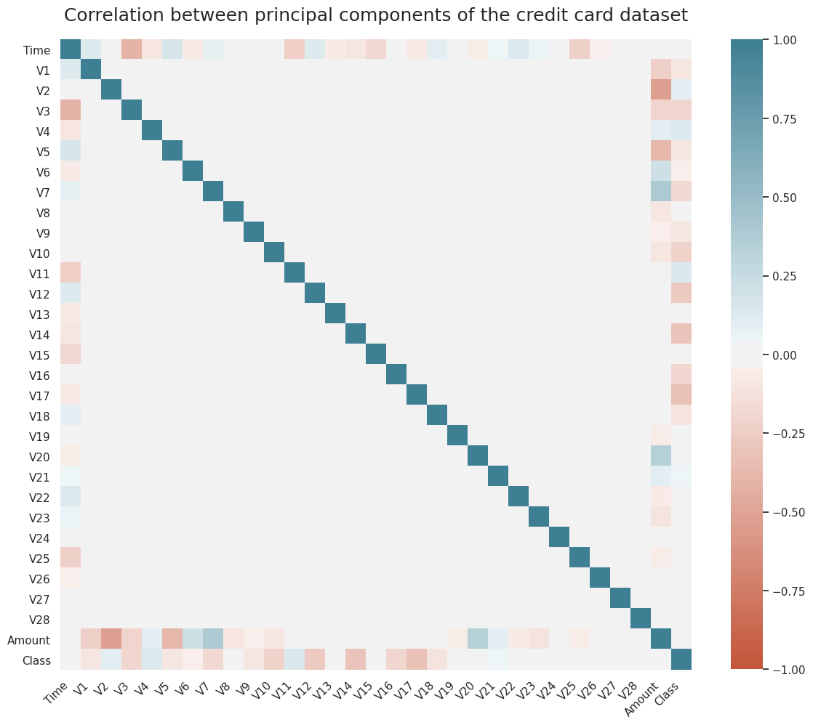
As we can see in Figure 1, most of the data features are not correlated. This is because before publishing, most of the features have been transformed using Principal Component Analysis (PCA). The importance of these features, however, could be assessed using the RandomForestClassifier.feature_importances_ of sklearn.ensemble which requires training a classification tree on the data or SelectKbest method from sklearn.feature_selection for a general model.
Feature importance
from sklearn.ensemble import RandomForestClassifier
from sklearn.feature_selection import SelectKBest
from sklearn.feature_selection import f_classif
def get_feature_importance_Kbest(X, y, feature_names, n_features_to_plot=30):
kbest = SelectKBest(score_func=f_classif, k=n_features_to_plot)
fit = kbest.fit(X, y)
feature_ids_sorted = np.argsort(fit.scores_)[::-1]
features_sorted_by_importance = np.array(feature_names)[feature_ids_sorted]
try:
feature_importance_array = np.vstack((
features_sorted_by_importance[:n_features_to_plot],
np.array(sorted(fit.scores_)[::-1][:n_features_to_plot])
)).T
except:
feature_importance_array = np.vstack((
features_sorted_by_importance[:],
np.array(sorted(fit.scores_)[::-1][:])
)).T
feature_importance_data = pd.DataFrame(feature_importance_array, columns=['feature', 'score'])
feature_importance_data['score'] = feature_importance_data['score'].astype(float)
return feature_importance_data
# Using RF feature_importances_
def get_feature_importance_RF(X, y, feature_names, n_features_to_plot=30):
RF = RandomForestClassifier(random_state=0)
RF.fit(X, y)
importances_RF = RF.feature_importances_
feature_ids_sorted = np.argsort(importances_RF)[::-1]
features_sorted_by_importance = np.array(feature_names)[feature_ids_sorted]
try:
feature_importance_array = np.vstack((
features_sorted_by_importance[:n_features_to_plot],
np.array(sorted(importances_RF)[::-1][:n_features_to_plot])
)).T
except:
feature_importance_array = np.vstack((
features_sorted_by_importance[:],
np.array(sorted(importances_RF)[::-1][:])
)).T
feature_importance_data = pd.DataFrame(feature_importance_array, columns=['feature', 'score'])
feature_importance_data['score'] = feature_importance_data['score'].astype(float)
return feature_importance_data
# Features and response variable
X = df.iloc[:,:30].values
y = df.iloc[:,30].values
feature_names = list(df.columns.values[:30])
# Using KBest
importances_KBest = get_feature_importance_Kbest(X, y, feature_names)
# Using RF
importances_RF = get_feature_importance_RF(X, y, feature_names)pd.concat([importances_RF,importances_KBest],axis=1)| RF | KBest | |||
|---|---|---|---|---|
| feature | score | feature | score | |
| 0 | V14 | 0.14 | V17 | 33979.17 |
| 1 | V17 | 0.14 | V14 | 28695.55 |
| 2 | V12 | 0.13 | V12 | 20749.82 |
| 3 | V10 | 0.09 | V10 | 14057.98 |
| 4 | V16 | 0.08 | V16 | 11443.35 |
| 5 | V11 | 0.06 | V3 | 11014.51 |
| 6 | V9 | 0.04 | V7 | 10349.61 |
| 7 | V18 | 0.03 | V11 | 6999.36 |
| 8 | V7 | 0.02 | V4 | 5163.83 |
| 9 | V4 | 0.02 | V18 | 3584.38 |
| 10 | V26 | 0.02 | V1 | 2955.67 |
| 11 | V21 | 0.02 | V9 | 2746.60 |
| 12 | V1 | 0.01 | V5 | 2592.36 |
| 13 | V6 | 0.01 | V2 | 2393.40 |
| 14 | V3 | 0.01 | V6 | 543.51 |
| 15 | V8 | 0.01 | V21 | 465.92 |
| 16 | Time | 0.01 | V19 | 344.99 |
| 17 | V5 | 0.01 | V20 | 115.00 |
| 18 | V2 | 0.01 | V8 | 112.55 |
| 19 | V20 | 0.01 | V27 | 88.05 |
| 20 | V19 | 0.01 | Time | 43.25 |
| 21 | V27 | 0.01 | V28 | 25.90 |
| 22 | V22 | 0.01 | V24 | 14.85 |
| 23 | Amount | 0.01 | Amount | 9.03 |
| 24 | V13 | 0.01 | V13 | 5.95 |
| 25 | V15 | 0.01 | V26 | 5.65 |
| 26 | V24 | 0.01 | V15 | 5.08 |
| 27 | V28 | 0.01 | V25 | 3.12 |
| 28 | V25 | 0.01 | V23 | 2.05 |
| 29 | V23 | 0.01 | V22 | 0.18 |
Note that the two methods rank the features similarly in terms of importance.
Class distributions for the 5 most important fatures
cols = ["#009900", "#ffcc00", "#0099cc", "#cc0066", "#666699"]
fig = plt.figure(figsize=(8,8), dpi=100)
important_features = ['V14','V17','V12','V10','V16']
theta=2*np.pi/5
offset = np.pi/2 - theta
radius = 0.3
pentagon_vertices = [[0.5+radius*(np.cos(x*theta+offset)),
0.5+radius*(np.sin(x*theta+offset))]
for x in range(5)]
for i, col in enumerate(important_features):
tmp_ax =fig.add_axes([pentagon_vertices[i][0],
pentagon_vertices[i][1],
.25,
.25])
sns.kdeplot(df[df['Class']==0][col], shade=True, color=cols[i], ax=tmp_ax)
sns.kdeplot(df[df['Class']==1][col], shade=False, color=cols[i], ax=tmp_ax, linestyle="--")
tmp_ax.set_xticklabels([])
tmp_ax.set_yticklabels([])
tmp_ax.set_title(important_features[i], fontsize=14)
if i==len(important_features)-1:
leg = tmp_ax.get_legend()
leg.legendHandles[0].set_color('k')
leg.legendHandles[1].set_color('k')
plt.legend([], [], frameon=False)
fig.legend(leg.legendHandles, ['valid','fraud'], loc='center')
sns.despine(left=True)
plt.suptitle('Kernel Density Estimate (KDE) plot of class distributions for \n 5 most important features', x=0.64, y=1.15);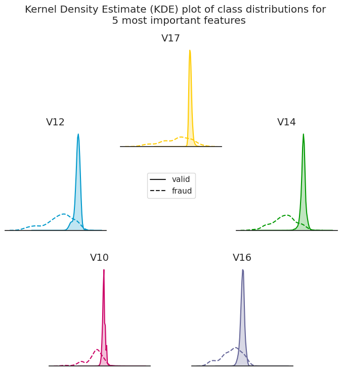
Model Selection
This part explains the model selection process. We use the sklearn implementation of the candidate models except for the XGBoost classifier where we use the xgboost library.
Notes regarding the model selection process
-
Due to the extreme class imbalance in the dataset, we take advantage of the
sklearn's Stratified K-Folds cross-validator (StratifiedKFold) to ensure that the observations are distributed with a similar class ratio $\bigg(\dfrac{\text{positive class count}}{\text{negative class count}}\bigg)$ across the folds. -
We choose
scoring='average_precision'as the model evaluation criteria. Ideally we'd want to use Precision-Recall Area Under Curve (PR-AUC) as the criteria but since it is not provided bysklearn, we useaverage_precision(AP) which summarizes a precision-recall curve as the weighted mean of precisions achieved at each threshold, with the increase in recall from the previous threshold used as the weight:
$$
\text{AP} = \sum_n (R_n - R_{n-1}) P_n,
$$
where $P_n$ and $R_n$ are the precision and recall, respectively, at the $n$-th threshold [ref].
# A whole host of Scikit-learn models
from sklearn.svm import SVC
from sklearn.naive_bayes import GaussianNB
from sklearn.ensemble import GradientBoostingClassifier
from sklearn.linear_model import LogisticRegression
from sklearn.neighbors import KNeighborsClassifier
from sklearn.tree import DecisionTreeClassifier
from xgboost import XGBClassifier
from sklearn.ensemble import RandomForestClassifier
from sklearn.pipeline import make_pipeline
from sklearn.model_selection import train_test_split
from sklearn.model_selection import cross_val_score
from sklearn.model_selection import StratifiedKFold
import time
# We use StratifiedKFold to guarantee similar distribution in train and test data
# We set the train:test ratio to 4:1 - The train set will ultimately be split
# into train and validation sets itself, with the same ratio! See below
# X
# ___________/\___________
# / \
# x_1, x_2, x_3, ... , x_n
# X_train X_test
# _______/\_______ __/\__
# / \ / \
# X_test will be unseen until the very last step!
# X_train
# _______/\_______
# / \
# ||
# ||
# \/
#
# X_tr X_val
# ____/\____ _/\_
# / \/ \
num_splits = 5
skf = StratifiedKFold(n_splits=num_splits, random_state=1, shuffle=True)
# Features and response variable
X = df.iloc[:,:30].values
y = df.iloc[:,30].values
X_train, X_test, y_train, y_test = train_test_split(X, y, test_size=0.2, random_state=1, stratify=y)
model_dict = {'CT':[DecisionTreeClassifier()],
'GB':[GradientBoostingClassifier()],
'KNN':[KNeighborsClassifier()],
'LR':[LogisticRegression()],
'NB':[GaussianNB()],
'RF':[RandomForestClassifier()],
'SVC':[SVC()],
'XGB':[XGBClassifier()]}Comparing the model performances to find the winner model
for model_name, model in model_dict.items():
# train the model
t_start = time.time()
cv_results = cross_val_score(model[0],
X_train,
y_train,
cv=skf,
scoring='average_precision',
verbose=10,
n_jobs=-1)
# save the results
calc_time = time.time() - t_start
model_dict[model_name].append(cv_results)
model_dict[model_name].append(calc_time)
print(("{0} model gives an AP of {1:.2f}% with a standard deviation "
"{2:.2f} (took {3:.1f} seconds)").format(model_name,
100*cv_results.mean(),
100*cv_results.std(),
calc_time)
) [Parallel(n_jobs=-1)]: Using backend LokyBackend with 24 concurrent workers.
[Parallel(n_jobs=-1)]: Done 2 out of 5 | elapsed: 15.6s remaining: 23.4s
[Parallel(n_jobs=-1)]: Done 3 out of 5 | elapsed: 15.8s remaining: 10.5s
[Parallel(n_jobs=-1)]: Done 5 out of 5 | elapsed: 16.9s remaining: 0.0s
[Parallel(n_jobs=-1)]: Done 5 out of 5 | elapsed: 16.9s finished
[Parallel(n_jobs=-1)]: Using backend LokyBackend with 24 concurrent workers.
CT model gives an AP of 53.17% with a standard deviation 3.44 (took 17.1 seconds)
[Parallel(n_jobs=-1)]: Done 2 out of 5 | elapsed: 4.6min remaining: 6.9min
[Parallel(n_jobs=-1)]: Done 3 out of 5 | elapsed: 4.6min remaining: 3.1min
[Parallel(n_jobs=-1)]: Done 5 out of 5 | elapsed: 4.7min remaining: 0.0s
[Parallel(n_jobs=-1)]: Done 5 out of 5 | elapsed: 4.7min finished
[Parallel(n_jobs=-1)]: Using backend LokyBackend with 24 concurrent workers.
GB model gives an AP of 59.87% with a standard deviation 4.48 (took 279.6 seconds)
[Parallel(n_jobs=-1)]: Done 2 out of 5 | elapsed: 1.8min remaining: 2.7min
[Parallel(n_jobs=-1)]: Done 3 out of 5 | elapsed: 2.0min remaining: 1.3min
KNN model gives an AP of 78.70% with a standard deviation 3.31 (took 131.1 seconds)
[Parallel(n_jobs=-1)]: Done 5 out of 5 | elapsed: 2.2min remaining: 0.0s
[Parallel(n_jobs=-1)]: Done 5 out of 5 | elapsed: 2.2min finished
[Parallel(n_jobs=-1)]: Using backend LokyBackend with 24 concurrent workers.
[Parallel(n_jobs=-1)]: Done 2 out of 5 | elapsed: 2.9s remaining: 4.3s
[Parallel(n_jobs=-1)]: Done 3 out of 5 | elapsed: 2.9s remaining: 1.9s
[Parallel(n_jobs=-1)]: Done 5 out of 5 | elapsed: 3.1s remaining: 0.0s
[Parallel(n_jobs=-1)]: Done 5 out of 5 | elapsed: 3.1s finished
[Parallel(n_jobs=-1)]: Using backend LokyBackend with 24 concurrent workers.
LR model gives an AP of 72.42% with a standard deviation 2.56 (took 3.3 seconds)
[Parallel(n_jobs=-1)]: Done 2 out of 5 | elapsed: 0.5s remaining: 0.8s
[Parallel(n_jobs=-1)]: Done 3 out of 5 | elapsed: 0.5s remaining: 0.4s
[Parallel(n_jobs=-1)]: Done 5 out of 5 | elapsed: 0.5s remaining: 0.0s
[Parallel(n_jobs=-1)]: Done 5 out of 5 | elapsed: 0.5s finished
[Parallel(n_jobs=-1)]: Using backend LokyBackend with 24 concurrent workers.
NB model gives an AP of 8.54% with a standard deviation 0.50 (took 0.7 seconds)
[Parallel(n_jobs=-1)]: Done 2 out of 5 | elapsed: 2.7min remaining: 4.0min
[Parallel(n_jobs=-1)]: Done 3 out of 5 | elapsed: 2.7min remaining: 1.8min
[Parallel(n_jobs=-1)]: Done 5 out of 5 | elapsed: 3.0min remaining: 0.0s
[Parallel(n_jobs=-1)]: Done 5 out of 5 | elapsed: 3.0min finished
[Parallel(n_jobs=-1)]: Using backend LokyBackend with 24 concurrent workers.
RF model gives an AP of 84.02% with a standard deviation 3.00 (took 180.4 seconds)
[Parallel(n_jobs=-1)]: Done 2 out of 5 | elapsed: 10.4s remaining: 15.6s
[Parallel(n_jobs=-1)]: Done 3 out of 5 | elapsed: 10.5s remaining: 7.0s
[Parallel(n_jobs=-1)]: Done 5 out of 5 | elapsed: 10.7s remaining: 0.0s
[Parallel(n_jobs=-1)]: Done 5 out of 5 | elapsed: 10.7s finished
[Parallel(n_jobs=-1)]: Using backend LokyBackend with 24 concurrent workers.
SVC model gives an AP of 75.22% with a standard deviation 3.54 (took 10.8 seconds)
[Parallel(n_jobs=-1)]: Done 2 out of 5 | elapsed: 1.6min remaining: 2.4min
[Parallel(n_jobs=-1)]: Done 3 out of 5 | elapsed: 1.6min remaining: 1.1min
XGB model gives an AP of 84.89% with a standard deviation 2.92 (took 98.1 seconds)
[Parallel(n_jobs=-1)]: Done 5 out of 5 | elapsed: 1.6min remaining: 0.0s
[Parallel(n_jobs=-1)]: Done 5 out of 5 | elapsed: 1.6min finished
XGB and RF outperform the other algorithms with XGB being slightly more accurate than the random forest classifier so as we said previously, we choose XGB as the winner. In the next part, we will go through the process of tuning the model.
Hyperparameter tuning of the XGBoost model
In this part, we'd like to find the set of model parameters that work best on our credit card fraud detection problem. How can we configure the model so that we get the best model performance for the dataset we have and the evaluation metric that we specify?
We are aiming to achieve this while ensuring that the resulted parameters don't cause overfitting. We use XGBClassifier() with the default parameters as the baseline classifier. The following describes a summary of the steps and some important notes regarding the model parameters and cross-validation methodology:
- We split the data into training and test splits while maintaining the class ratio (exactly what we did in the model selection)
-
Model performance on the test data
(X_test, y_test)is not going to be assessed until the final model evaluation where both the baseline classifier and the tuned model are going to be tested against the unseen test data -
We use
RepeatedStratifiedKFold()which repeats theStratifiedKFold()$n_{\mathrm{repeats}}$ times ($3\leq n_{\mathrm{repeats}} \leq 10$) and outputs the model performance-metric (PR-AUC in this case) as the mean across all folds and all repeats. This improves the estimate of the mean model performance-metric with the downside of increased model-evaluation cost. We use $n_{\mathrm{repeats}}=5$ in this work. - early stopping is one way to reduce overfitting of training data. Here's a brief summary of how it works:
-
The user specifies an evaluation metric (
eval_metric) and a validation set (eval_set) to be monitored during the training process. -
The evaluation metric for the
eval_setneeds to "improve" at least once everyearly_stopping_roundsof boosting rounds so that the training continues. -
Early stopping terminates the training process when the number of boosting rounds with no improvement in evaluation-metric for the
eval_setreachesearly_stopping_rounds. -
XGBoostoffers a wide range of evaluation metrics (see here for the full list) that are either minimized (RMSE, log loss, etc.) or maximized (MAP, NDCG, AUC) during the training process. We useaucprfor this classification problem for the reasons discussed earlier. -
Normally, we would use
sklearn`sGridsearchCV()to find the hyperparameters of the model. This works great, especially if the model is a native sklearn model. Infact, most sklearn models come with their CV version, e.g.,LogisticRegressionCV(), which performs grid search over the user-defined hyperparameter dictionary. However, as we mentioned, when we try to useXGBoost's early stopping, we need to specify aneval_setto compare the evaluation-metric performance on it with that of the training data. Now if we useGridSearchCV(), ideally we would wantXGBoostto use the held-out fold as the evaluation set to determine the optimal number of boosting rounds, however, that doesn't seem to be possible when usingGridSearchCV(). One way is to use a static held-out set for XGBoost but that doesn't make sense as it defeats the purpose of cross validation. To address this issue, I defined a custom cross-validation function that for each hyperparameter-set candidate: -
For each fold, finds the optimal number of boosting rounds, the number of rounds where the
eval_metricreached its best value (best_score) for theeval_set. -
Reports the mean and standard deviation of the
eval_metric(for both training and evaluation data) and best number of rounds by averaging over the folds. -
Finally, returns the optimal combination of hyperparameters that gave the best
eval_metric. -
Note:
xgboost.best_ntree_limityou do best_nrounds = int(best_nrounds / 0.8) you consider that your validation set was 20% of your whole training data (another way of saying that you performed a 5-fold cross-validation). The rule can then be generalized as: n_folds = 5 best_nrounds = int((res.shape[0] - estop) / (1 - 1 / n_folds)) -
Because
XGBClassifier()accepts a lot of hyperparameters, it would be computationally inefficient and extremely time-consuming to iterate over the enormous number of hyperparameter combinations. What we can do instead is to divide the parameters into a few independent or weakly-interacting groups and find the best hyperparameter combination for each group. The optimal set of parameters can ultimately be determined as the union of the best hyperparameter groups. The following is the hyperparameter groups and the order that we optimize them (reference): max_depth,min_child_weightcolsample_bytree,colsample_bylevel,subsamplealpha,gammascale_pos_weightlearning_rate-
To ensure that the model hyperparameters don't cause overfitting, we save the model's
eval_metricresults for both training and validation data. At the end, we throw out the set of hyperparameters where the model exhibits a better performance for the training data than the validation data. -
Because we are using early stopping, the model throws out the optimal number of trees (
n_estimators) for each fold. For each parameter group, the best number of boosting trees is returned as the mean over the folds. -
We use a Python
dictionary,progress, to record the changes in validation and training dataeval_metric(s). This can help a lot with assessing whether the model is overfitting or not. - Our efforts to reduce overfitting are in accordance with XGBoost's Notes on Parameter Tuning.
Data preparation for CV
import xgboost as xgb
from sklearn.model_selection import RepeatedStratifiedKFold
from sklearn.model_selection import train_test_split
# load data
X = df.iloc[:,:30].values
y = df.iloc[:,30].values
all_features = list(df.columns.values[:30])
# train-test stratified split; stratify=y is used to ensure
# that the two splits have similar class distribution
X_train, X_test, y_train, y_test = train_test_split(X, y, test_size=0.2, random_state=1, stratify=y)
model = XGBClassifier(tree_method='gpu_hist',
objective='binary:logistic')
# fold parameters
num_splits = 4
num_reps = 5
rand_state = 123
rskf = RepeatedStratifiedKFold(n_splits=num_splits,
n_repeats=num_reps,
random_state=rand_state)Helper functions for CV
First, we define a function that for the given set of hyperparameters, trains the XGBClassifier() and spits out the model's mean-over-folds performance metrics.
from sklearn.metrics import average_precision_score
from datetime import datetime, timedelta
from itertools import product
from pprint import pprint
np.set_printoptions(threshold=5)
Early_Stop_Rounds = 400
Num_Boosting_Rounds = 4000
from sklearn.metrics import average_precision_score
from datetime import datetime, timedelta
from itertools import product
from pprint import pprint
import random
np.set_printoptions(threshold=5)
Early_Stop_Rounds = 400
Num_Boosting_Rounds = 4000
def cv_summary(X_data, y_data, params, feature_names, cv,
objective_func='binary:logistic',
eval_metric='aucpr',
spit_out_fold_results=False,
spit_out_summary=True,
num_boost_rounds=Num_Boosting_Rounds,
early_stop_rounds=Early_Stop_Rounds,
save_fold_preds=False):
"""
Returns cv results for a given set of parameters
"""
# number of folds
num_splits = cv.cvargs['n_splits']
# num_rounds: total number of rounds (= n_repeats*n_folds)
num_rounds = cv.get_n_splits()
# train_scores and val_scores store the mean over all repeats of
# the in-sample and held-out predictions, respectively
train_scores = np.zeros(num_rounds)
valid_scores = np.zeros(num_rounds)
best_num_estimators = np.zeros(num_rounds)
# track eval results
eval_results = []
fold_preds = {'train':[], 'eval':[]}
for i, (train_index, valid_index) in enumerate(cv.split(X_data, y_data)):
# which repeat
rep = i//num_splits + 1
# which fold
fold = i%num_splits + 1
# XGBoost train uses DMatrix
xg_train = xgb.DMatrix(X_data[train_index,:],
feature_names=feature_names,
label = y_data[train_index])
xg_valid = xgb.DMatrix(X_data[valid_index,:],
feature_names=feature_names,
label = y_data[valid_index])
# set evaluation
params['tree_method'] = 'gpu_hist'
params['objective'] = objective_func
params['eval_metric'] = eval_metric
# track eval results
progress = dict()
# train using train data
if early_stop_rounds is not None:
clf = xgb.train(params, xg_train,
num_boost_round = num_boost_rounds,
evals=[(xg_train, "train"), (xg_valid, "eval")],
early_stopping_rounds=early_stop_rounds,
evals_result=progress,
verbose_eval=False)
# for validation data we don't need to set ntree_limit because from
# XGBoost docs:
#
# fit():
#
# if early_stopping_rounds is not None:
# self.best_ntree_limit = self._Booster.best_ntree_limit
# ...
# ...
# predict():
#
# if ntree_limit is None:
# ntree_limit = getattr(self, "best_ntree_limit", 0)
y_pred_vl = clf.predict(xgb.DMatrix(X_train[valid_index,:],
feature_names=feature_names))
# for train data, we scale up the number of rounds, i.e., we consider that the
# validation set size was 1/num_splits of the training data size. Essentially
# what we report as the optimal number of boosting trees is for a data with
# the size of the training data
best_num_estimators[i] = int(clf.best_ntree_limit / (1 - 1 / num_splits))
# clf.setattr("best_ntree_limit", best_num_estimators[i])
y_pred_tr = clf.predict(xgb.DMatrix(X_train[train_index,:],
feature_names=feature_names))
else:
clf = xgb.train(params, xg_train,
num_boost_round = num_boost_rounds,
evals=[(xg_train, "train"), (xg_valid, "eval")],
verbose_eval=False,
evals_result=progress)
best_num_estimators[i] = num_boost_rounds
y_pred_tr = clf.predict(xgb.DMatrix(X_train[train_index,:],
feature_names=feature_names),
ntree_limit=0)
y_pred_vl = clf.predict(xgb.DMatrix(X_train[valid_index,:],
feature_names=feature_names),
ntree_limit=0)
train_scores[i] = average_precision_score(y_train[train_index], y_pred_tr)
valid_scores[i] = average_precision_score(y_train[valid_index], y_pred_vl)
if save_fold_preds:
fold_preds['train'].append([y_train[train_index], y_pred_tr])
fold_preds['eval'].append([y_train[valid_index], y_pred_vl])
if spit_out_fold_results:
print(f"\n Repeat {rep}, Fold {fold} -",
f"PR-AUC tr = {train_scores[i]:<.3f},",
f"PR-AUC vl = {valid_scores[i]:<.3f}",
f"(diff = {train_scores[i] - valid_scores[i]:<.4f})",
)
if early_stop_rounds is not None:
print(f" best number of boosting rounds tr = {best_num_estimators[i]:<.0f}")
eval_results.append(progress)
# End of each repeat
if spit_out_summary:
print(f"\nSummary:\n",
f"mean PR-AUC training = {np.average(train_scores):<.3f}\n",
f"mean PR-AUC validation = {np.average(valid_scores):<.3f}\n",
f"mean PR-AUC difference = {np.average(train_scores-valid_scores):<.4f}"
)
if early_stop_rounds is not None:
print(f" average number of boosting rounds tr = {np.average(best_num_estimators):<.0f}")
out = [(np.average(x), np.std(x)) for x in [train_scores, valid_scores, best_num_estimators]]
return out, eval_results, fold_preds, clf
def cv_search_params(X_data, y_data, param_dict, feature_names, cv,
objective_func='binary:logistic', eval_metric='aucpr',
spit_out_fold_results=False, spit_out_summary=True,
num_boost_rounds=Num_Boosting_Rounds,
early_stop_rounds=None, random_grid_search = False,
save_fold_preds=False,
num_random_search_candidates=10):
"""
Returns the cv_summary() for all the combinations of the given parameter dictionary
"""
search_results = []
param_values = [
x if (isinstance(x, list) or isinstance(x, type(np.linspace(1,2,2))))
else [x] for x in param_dict.values()
]
param_dict = dict(zip(tuple(param_dict.keys()), param_values))
num_search_candidates = len(list(product(*param_values)))
all_search_params = []
num_rand_search_candidates = num_random_search_candidates
random_sample_ids = random.sample(range(num_search_candidates), num_rand_search_candidates)
all_search_params = []
for i, search_params in enumerate(product(*param_values)):
current_params = dict(zip(tuple(param_dict.keys()), search_params))
all_search_params.append(current_params)
if random_grid_search:
all_search_params = list(np.array(all_search_params)[random_sample_ids])
evals = [[] for i in range(len(all_search_params))]
print(f"Grid search started at {datetime.now()}")
print(f"Total number of hyperparameter candidates = {len(evals)}")
for i, search_params in enumerate(all_search_params):
start_time = datetime.now()
current_params = search_params
print(f'\nCV {i+1} on:\n')
pprint({k: v for k, v in current_params.items() if len(param_dict[k])>1})
print('\n started!')
results, evals[i], _, _ = cv_summary(X_data, y_data,
current_params, feature_names,
cv, objective_func=objective_func,
eval_metric=eval_metric,
spit_out_fold_results=spit_out_fold_results,
spit_out_summary=spit_out_summary,
early_stop_rounds=early_stop_rounds,
num_boost_rounds=num_boost_rounds)
end_time = datetime.now()
time_taken = f"{(end_time-start_time).total_seconds():.2f}"
if len(evals)>1:
print(f'CV {i+1} ended! (took {time_taken} seconds)')
else:
print(f'CV ended! (took {time_taken} seconds)')
[(tr_avg, tr_std),
(val_avg, val_std),
(numtrees_avg, numtrees_std)] = results
search_results.append([current_params,
tr_avg, tr_std,
val_avg, val_std,
numtrees_avg, numtrees_std,
tr_avg-val_avg, time_taken])
print(f"Grid search ended at {datetime.now()}")
search_df = pd.DataFrame(search_results,
columns=['current_params', 'tr_avg', 'tr_std',
'val_avg', 'val_std', 'numtrees_avg',
'numtrees_std', 'diff', 'time_taken'])
return search_df, evalsDividing the hyperparameters into orthogonal groups
Next, we define a hyperparameter dictionary and update it with some initial parameters for the model:
cur_params = {
'max_depth': 3,
'min_child_weight': 5,
'subsample': 1,
'colsample_bytree': 1,
'colsample_bylevel': 1,
'alpha': 1,
'gamma': 1,
'scale_pos_weight': 1,
'learning_rate': 2e-3,
}We then define the parameter groups that are going to be the target of grid search:
# current xgb parameters
param_group_1 = {'max_depth': [3, 4], 'min_child_weight': [1, 10, 20, 30, 40]}
param_group_2 = {'subsample': np.linspace(0.1, 1, 5),
'colsample_bytree': np.linspace(0.1, 1, 5),
'colsample_bylevel': np.linspace(0.1, 1, 5)}
param_group_3 = {'alpha': np.logspace(-6, 3, 4), 'gamma': np.linspace(1, 9, 5)}
param_group_4 = {'scale_pos_weight': [0.5, 1, 2, 5, 10, 20, 50, 100, 500, 1000]}
param_group_5 = {'learning_rate': np.logspace(-4, -2, 11)}Gridsearch for parameter group 1: max_depth and min_child_weight
We update the cur_params before performing the hyperparameter search. Also, it's a good practice to save the grid search results to minimize the chances of data loss. We use .to_pickle() method of pandas to save the resulting DataFrame.
search_params = param_group_1
cur_params.update(search_params)
pprint(cur_params) {'alpha': 1,
'colsample_bylevel': 1,
'colsample_bytree': 1,
'gamma': 1,
'learning_rate': 0.002,
'max_depth': [3, 4],
'min_child_weight': [1, 10, 20, 30, 40],
'scale_pos_weight': 1,
'subsample': 1}
tmp_df, evals = cv_search_params(X_train, y_train, cur_params, all_features, rskf)
tmp_df.to_pickle('hyperparams_round1.pkl') Grid search on:
{'alpha': 1,
'colsample_bylevel': 1,
'colsample_bytree': 1,
'gamma': 1,
'learning_rate': 0.002,
'max_depth': [3, 4],
'min_child_weight': [1, 10, 20, 30, 40],
'scale_pos_weight': 1,
'subsample': 1}
started at 2021-06-04 12:41:46.384232
Total number of hyperparameter candidates = 10
CV 1 on:
{'max_depth': 3, 'min_child_weight': 1}
started!
Repeat 1, Fold 1 - PR-AUC tr = 0.816, PR-AUC vl = 0.752 (diff = 0.0639)
best number of boosting rounds tr = 386
Repeat 1, Fold 2 - PR-AUC tr = 0.871, PR-AUC vl = 0.813 (diff = 0.0584)
best number of boosting rounds tr = 5289
Repeat 1, Fold 3 - PR-AUC tr = 0.823, PR-AUC vl = 0.789 (diff = 0.0336)
best number of boosting rounds tr = 1209
...
Repeat 5, Fold 2 - PR-AUC tr = 0.762, PR-AUC vl = 0.739 (diff = 0.0232)
best number of boosting rounds tr = 1397
Repeat 5, Fold 3 - PR-AUC tr = 0.708, PR-AUC vl = 0.742 (diff = -0.0342)
best number of boosting rounds tr = 838
Repeat 5, Fold 4 - PR-AUC tr = 0.700, PR-AUC vl = 0.683 (diff = 0.0165)
best number of boosting rounds tr = 1110
Summary:
mean PR-AUC training = 0.728
mean PR-AUC validation = 0.718
mean PR-AUC difference = 0.0094
CV 10 ended! (took 319.31 seconds)
Grid search ended at 2021-06-04 14:17:32.954835
tmp_df| current_params | tr_avg | tr_std | val_avg | val_std | numtrees_avg | numtrees_std | diff | time_taken | |
|---|---|---|---|---|---|---|---|---|---|
| 0 | {'max_depth': 3, 'min_child_weight': 1, 'subsa... | 0.847 | 0.025 | 0.810 | 0.039 | 3163.150 | 1663.705 | 0.037 | 696.55 |
| 1 | {'max_depth': 3, 'min_child_weight': 10, 'subs... | 0.848 | 0.018 | 0.816 | 0.032 | 4030.550 | 1415.623 | 0.032 | 857.18 |
| 2 | {'max_depth': 3, 'min_child_weight': 20, 'subs... | 0.808 | 0.024 | 0.779 | 0.051 | 2194.450 | 1672.490 | 0.029 | 518.94 |
| 3 | {'max_depth': 3, 'min_child_weight': 30, 'subs... | 0.784 | 0.017 | 0.767 | 0.040 | 1859.400 | 1292.788 | 0.017 | 452.01 |
| 4 | {'max_depth': 3, 'min_child_weight': 40, 'subs... | 0.728 | 0.027 | 0.718 | 0.052 | 1168.550 | 277.548 | 0.009 | 319.31 |
| 5 | {'max_depth': 4, 'min_child_weight': 1, 'subsa... | 0.874 | 0.042 | 0.817 | 0.037 | 3179.400 | 1812.708 | 0.057 | 783.87 |
| 6 | {'max_depth': 4, 'min_child_weight': 10, 'subs... | 0.844 | 0.026 | 0.806 | 0.050 | 3240.800 | 1910.967 | 0.038 | 769.04 |
| 7 | {'max_depth': 4, 'min_child_weight': 20, 'subs... | 0.810 | 0.025 | 0.780 | 0.051 | 2319.850 | 1727.073 | 0.030 | 574.93 |
| 8 | {'max_depth': 4, 'min_child_weight': 30, 'subs... | 0.784 | 0.018 | 0.767 | 0.040 | 1858.900 | 1292.927 | 0.017 | 455.43 |
| 9 | {'max_depth': 4, 'min_child_weight': 40, 'subs... | 0.728 | 0.027 | 0.718 | 0.052 | 1168.550 | 277.548 | 0.009 | 319.31 |
We can remove the rows where the difference between the training and validation performance is significant. I take the threshold for this difference to be 2%, meaning that we disregard the parameters that cause a difference in performance $>2\%$ between training and validation sets. For the rest of this project, we will refer to this threshold as the acceptance threshold (not to be confused with the precision-recall threshold) and to this condition as the acceptance condition. This reduces the chances that the final model parameters cause overfitting. At the same time, we sort the output by val_avg which is the mean PR-AUC over the validation sets.
acceptance_threshold=0.02
cur_params = param_df[param_df['diff']<acceptance_threshold] \
.sort_values('val_avg', ascending=False)| current_params | tr_avg | tr_std | val_avg | val_std | numtrees_avg | numtrees_std | diff | time_taken | |
|---|---|---|---|---|---|---|---|---|---|
| 3 | {'max_depth': 3, 'min_child_weight': 30, 'subs... | 0.784 | 0.017 | 0.767 | 0.040 | 1859.400 | 1292.788 | 0.017 | 452.01 |
| 8 | {'max_depth': 4, 'min_child_weight': 30, 'subs... | 0.784 | 0.018 | 0.767 | 0.040 | 1858.900 | 1292.927 | 0.017 | 455.43 |
max_depth=3 and min_child_weight=30 gives a reasonable PR-AUC while ensuring that the model's performance on the test data remains close to that of the training data. Note that using max_depth=4 gives the same performance as max_depth=3 so we move forward with the latter to reduce the complexity of the model. Next, we examine the second hyperparameter group.
Acceptance threshold in the context of bias-variance trade-off
We can think of acceptance condition in the context of bias-variance trade-off.
We say a model has a high bias if it fails to use all the data in the observations. Such model relies mostly on the general information without taking into account the specifics. In contrast, we say a model has a high variance if it over-use theinformation in the data, i.e., relies too much on the specific data that is being trained on. Such model usually fails to generalize what it has learnt and reproduce its high performance when predicting the outcome for new, unseen data.
We can demonstrate this using an example relevant to our problem. The table below shows aucpr for two models I and II. When comparing the two models, model I exhibits a very high aucpr on the training data (low bias) but a significant difference in performance when tested on the test data (high variance); Model II on the other hand gives a comparatively lower aucpr on both the training and test data (high bias) but the model's performance on both datasets is quite similar (low variance)
| Model I | Model II | |||
|---|---|---|---|---|
| train | test | train | test | |
| 0.99 | 0.8 | 0.75 | 0.73 | |
| Bias | low | high | ||
| Variance | high | low | ||
high bias and high variance both lead to errors in model performance. Ideally we would want the model to have low bias (less error on training data) and low variance (less difference between the model performance between the train and testing data). Bias-variance trade-off is the sweet spot where the model performs between the errors introduced by the bias and the variance. In this project, I used acceptance condition to set a value for Bias-variance trade-off; however, depending on the business goal, one may use a totally different criteria to find the best model hyperparameters.
Gridsearch for parameter group 2: colsample_bylevel, colsample_bytree, and subsample
We update cur_params using the parameters obtained in previous step.
cur_params.update({'max_depth': 3, 'min_child_weight': 30})
search_params = param_group_2
cur_params.update(search_params)
pprint(cur_params){'alpha': 1,
'colsample_bylevel': array([0.1 , 0.325, 0.55 , 0.775, 1. ]),
'colsample_bytree': array([0.1 , 0.325, 0.55 , 0.775, 1. ]),
'gamma': 1,
'learning_rate': 0.002,
'max_depth': 3,
'min_child_weight': 30,
'scale_pos_weight': 1,
'subsample': array([0.1 , 0.325, 0.55 , 0.775, 1. ])}
tmp_df, evals = cv_search_params(X_train, y_train, cur_params, all_features, rskf) Grid search started at 2021-05-24 10:48:53.507958
Total number of hyperparameter candidates = 125
CV 1 on:
{'subsample': 0.1, 'colsample_bylevel': 0.1, 'colsample_bytree': 0.1}
started!
Summary:
mean PR-AUC training = 0.211
mean PR-AUC validation = 0.197
mean PR-AUC difference = 0.014
best number of boosting rounds = 703
CV 1 ended! (took 191.91 seconds)
...
CV 125 on:
{'subsample': 1.0, 'colsample_bylevel': 1.0, 'colsample_bytree': 1.0}
started!
Summary:
mean PR-AUC training = 0.784
mean PR-AUC validation = 0.767
mean PR-AUC difference = 0.0171
best number of boosting rounds = 1859
CV 125 ended! (took 475.21 seconds)
Grid search ended at 2021-05-24 12:27:25.227479
tmp_df[tmp_df['diff']<acceptance_threshold].sort_values('val_avg', ascending=False)| index | current_params | tr_avg | tr_std | val_avg | val_std | numtrees_avg | numtrees_std | diff | time_taken |
|---|---|---|---|---|---|---|---|---|---|
| 124 | {'max_depth': 3, 'min_child_weight': 30, 'subs... | 0.784 | 0.017 | 0.767 | 0.033 | 1859.600 | 1409.712 | 0.016 | 475.21 |
| 119 | {'max_depth': 3, 'min_child_weight': 30, 'subs... | 0.777 | 0.014 | 0.765 | 0.037 | 547.000 | 536.632 | 0.011 | 207.12 |
| 123 | {'max_depth': 3, 'min_child_weight': 30, 'subs... | 0.775 | 0.010 | 0.761 | 0.039 | 214.250 | 229.384 | 0.014 | 146.70 |
| 118 | {'max_depth': 3, 'min_child_weight': 30, 'subs... | 0.776 | 0.015 | 0.760 | 0.041 | 691.100 | 889.920 | 0.015 | 235.01 |
| 114 | {'max_depth': 3, 'min_child_weight': 30, 'subs... | 0.777 | 0.016 | 0.760 | 0.045 | 1015.400 | 1382.065 | 0.017 | 292.21 |
| ... | ... | ... | ... | ... | ... | ... | ... | ... | ... |
| 5 | {'max_depth': 3, 'min_child_weight': 30, 'subs... | 0.211 | 0.039 | 0.211 | 0.055 | 862.600 | 364.775 | -0.000 | 215.35 |
| 10 | {'max_depth': 3, 'min_child_weight': 30, 'subs... | 0.203 | 0.037 | 0.210 | 0.068 | 1018.400 | 510.480 | -0.007 | 239.26 |
| 1 | {'max_depth': 3, 'min_child_weight': 30, 'subs... | 0.211 | 0.052 | 0.197 | 0.062 | 703.450 | 378.373 | 0.014 | 191.28 |
| 2 | {'max_depth': 3, 'min_child_weight': 30, 'subs... | 0.211 | 0.052 | 0.197 | 0.062 | 703.450 | 378.373 | 0.014 | 191.46 |
| 0 | {'max_depth': 3, 'min_child_weight': 30, 'subs... | 0.211 | 0.052 | 0.197 | 0.062 | 703.450 | 378.373 | 0.014 | 191.91 |
125 rows × 9 columns
Note that all the hyperparameter candidates satisfy the acceptance condition. We can query the first 10 hyperparameters with the best average PR-AUC on the validation data using:
[list(map(tmp_df[tmp_df['diff']<acceptance_threshold] \
.sort_values('val_avg', ascending=False)['current_params'] \
.iloc[x] \
.get,
['subsample', 'colsample_bytree', 'colsample_bylevel']
)
) for x in range(10)
][[1.0, 1.0, 1.0], [1.0, 0.775, 1.0], [1.0, 1.0, 0.775], [1.0, 0.775, 0.775], [1.0, 0.55, 1.0], [1.0, 1.0, 0.325], [1.0, 1.0, 0.55], [1.0, 0.775, 0.55], [1.0, 0.55, 0.775], [0.775, 1.0, 1.0]]
The results suggest that colsample_bylevel doesn't influenece the accuracy of the predictions. We can take a look at the evolution of PR-AUC for colsample_bylevel=1 and different values of subsample and colsample_bytree in our grid-search space.
fig = plt.figure(figsize=(10,10))
fig.tight_layout()
ax = fig.add_subplot(111, projection='3d')
ax.view_init(elev=45, azim=-135)
params = ['subsample', 'colsample_bytree', 'colsample_bylevel']
param_values = np.linspace(0.1,1,5)
indices = [x for x in range(len(tmp_df)) if tmp_df['current_params'] \
.iloc[x] \
.get('colsample_bylevel')==1]
_xx, _yy = np.meshgrid(param_values, param_values)
width = depth = 0.225
xdata, ydata = _xx.ravel()-width/2, _yy.ravel()-depth/2
zdata = tmp_df['val_avg'] \
.iloc[indices] \
.values \
.reshape(xdata.shape)
bottom = np.zeros_like(zdata)
# Get desired colormap - you can change this!
cmap = cm.get_cmap('jet')
rgba = [cmap(k) for k in zdata]
ax.bar3d(xdata, ydata, bottom, width, depth, zdata, color=rgba, zsort='max',shade=True)
ax.set_xlim([min(xdata)+0.03, max(xdata)+width])
ax.set_ylim([min(ydata)+0.03, max(ydata)+depth])
ax.set_zlim([0, 1])
ax.set_xticks(param_values)
ax.set_yticks(param_values)
plt.title("Average PR-AUC for different values of subsample \nand colsample_bytree for colsample_bytree=1", fontsize=20)
plt.ylabel("subsample", labelpad=20)
plt.xlabel("colsample_bylevel", labelpad=20)
ax.grid(False)
plt.savefig("paramgr")
plt.show()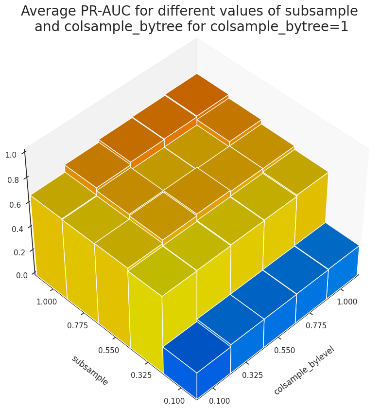
Figure 3 shows that the variation of subsample has the most significant effect on the accuracy of the model.
Finally, we set the first row of the resulting DataFrame as the initial hyperparameter for the next round of grid search.
cur_params = tmp_df[tmp_df['diff']<acceptance_threshold] \
.sort_values('val_avg', ascending=False)['current_params'] \
.iloc[0]
pprint(cur_params){'alpha': 1,
'colsample_bylevel': 1.0,
'colsample_bytree': 1.0,
'gamma': 1,
'learning_rate': 0.002,
'max_depth': 3,
'min_child_weight': 30,
'scale_pos_weight': 1,
'subsample': 1.0}
Gridsearch for parameter group 3: alpha and gamma
cur_params.update(param_group_3)
pprint(cur_params){'alpha': array([1.e-06, 1.e-03, 1.e+00, 1.e+03]),
'colsample_bylevel': 1.0,
'colsample_bytree': 1.0,
'gamma': array([1., 3., 5., 7., 9.]),
'learning_rate': 0.002,
'max_depth': 3,
'min_child_weight': 30,
'scale_pos_weight': 1,
'subsample': 1.0}
tmp_df, evals = cv_search_params(X_train, y_train, cur_params, all_features, rskf)
tmp_df.to_pickle('hyperparams_round3.pkl')Grid search on:
{'alpha': array([1.e-06, 1.e-03, 1.e+00, 1.e+03]),
'colsample_bylevel': 1.0,
'colsample_bytree': 1.0,
'eval_metric': 'aucpr',
'gamma': array([1., 3., 5., 7., 9.]),
'learning_rate': 0.002,
'max_depth': 3,
'min_child_weight': 30,
'objective': 'binary:logistic',
'scale_pos_weight': 1.0,
'subsample': 1.0,
'tree_method': 'gpu_hist'}
started at 2021-06-07 12:26:51.336554
Total number of hyperparameter candidates = 20
CV 1 on:
{'alpha': 1e-06, 'gamma': 1.0}
started!
Summary:
mean PR-AUC training = 0.781
mean PR-AUC validation = 0.762
mean PR-AUC difference = 0.0192
average number of boosting rounds tr = 1450
CV 1 ended! (took 384.88 seconds)
CV 2 on:
{'alpha': 1e-06, 'gamma': 3.0}
started!
Summary:
mean PR-AUC training = 0.788
mean PR-AUC validation = 0.773
mean PR-AUC difference = 0.0157
average number of boosting rounds tr = 2000
CV 2 ended! (took 471.16 seconds)
CV 3 on:
{'alpha': 1e-06, 'gamma': 5.0}
started!
Summary:
mean PR-AUC training = 0.784
mean PR-AUC validation = 0.772
mean PR-AUC difference = 0.0129
average number of boosting rounds tr = 1809
CV 3 ended! (took 432.78 seconds)
CV 4 on:
{'alpha': 1e-06, 'gamma': 7.0}
started!
Summary:
mean PR-AUC training = 0.782
mean PR-AUC validation = 0.764
mean PR-AUC difference = 0.0177
average number of boosting rounds tr = 1881
CV 4 ended! (took 440.80 seconds)
CV 5 on:
{'alpha': 1e-06, 'gamma': 9.0}
started!
Summary:
mean PR-AUC training = 0.778
mean PR-AUC validation = 0.759
mean PR-AUC difference = 0.0187
average number of boosting rounds tr = 1506
CV 5 ended! (took 375.05 seconds)
CV 6 on:
{'alpha': 0.001, 'gamma': 1.0}
started!
Summary:
mean PR-AUC training = 0.782
mean PR-AUC validation = 0.763
mean PR-AUC difference = 0.0190
average number of boosting rounds tr = 1516
CV 6 ended! (took 395.33 seconds)
CV 7 on:
{'alpha': 0.001, 'gamma': 3.0}
started!
Summary:
mean PR-AUC training = 0.788
mean PR-AUC validation = 0.773
mean PR-AUC difference = 0.0158
average number of boosting rounds tr = 2023
CV 7 ended! (took 474.74 seconds)
CV 8 on:
{'alpha': 0.001, 'gamma': 5.0}
started!
Summary:
mean PR-AUC training = 0.785
mean PR-AUC validation = 0.772
mean PR-AUC difference = 0.0130
average number of boosting rounds tr = 2004
CV 8 ended! (took 463.54 seconds)
CV 9 on:
{'alpha': 0.001, 'gamma': 7.0}
started!
Summary:
mean PR-AUC training = 0.782
mean PR-AUC validation = 0.764
mean PR-AUC difference = 0.0177
average number of boosting rounds tr = 1880
CV 9 ended! (took 441.33 seconds)
CV 10 on:
{'alpha': 0.001, 'gamma': 9.0}
started!
Summary:
mean PR-AUC training = 0.778
mean PR-AUC validation = 0.759
mean PR-AUC difference = 0.0188
average number of boosting rounds tr = 1506
CV 10 ended! (took 375.77 seconds)
CV 11 on:
{'alpha': 1.0, 'gamma': 1.0}
started!
Summary:
mean PR-AUC training = 0.784
mean PR-AUC validation = 0.767
mean PR-AUC difference = 0.0171
average number of boosting rounds tr = 1859
CV 11 ended! (took 452.86 seconds)
CV 12 on:
{'alpha': 1.0, 'gamma': 3.0}
started!
Summary:
mean PR-AUC training = 0.784
mean PR-AUC validation = 0.770
mean PR-AUC difference = 0.0147
average number of boosting rounds tr = 1930
CV 12 ended! (took 457.49 seconds)
CV 13 on:
{'alpha': 1.0, 'gamma': 5.0}
started!
Summary:
mean PR-AUC training = 0.779
mean PR-AUC validation = 0.765
mean PR-AUC difference = 0.0137
average number of boosting rounds tr = 1604
CV 13 ended! (took 395.10 seconds)
CV 14 on:
{'alpha': 1.0, 'gamma': 7.0}
started!
Summary:
mean PR-AUC training = 0.780
mean PR-AUC validation = 0.761
mean PR-AUC difference = 0.0186
average number of boosting rounds tr = 1687
CV 14 ended! (took 410.15 seconds)
CV 15 on:
{'alpha': 1.0, 'gamma': 9.0}
started!
Summary:
mean PR-AUC training = 0.776
mean PR-AUC validation = 0.756
mean PR-AUC difference = 0.0197
average number of boosting rounds tr = 1556
CV 15 ended! (took 379.72 seconds)
CV 16 on:
{'alpha': 1000.0, 'gamma': 1.0}
started!
Summary:
mean PR-AUC training = 0.672
mean PR-AUC validation = 0.672
mean PR-AUC difference = -0.0001
average number of boosting rounds tr = 420
CV 16 ended! (took 168.22 seconds)
CV 17 on:
{'alpha': 1000.0, 'gamma': 3.0}
started!
Summary:
mean PR-AUC training = 0.672
mean PR-AUC validation = 0.672
mean PR-AUC difference = -0.0001
average number of boosting rounds tr = 420
CV 17 ended! (took 168.11 seconds)
CV 18 on:
{'alpha': 1000.0, 'gamma': 5.0}
started!
Summary:
mean PR-AUC training = 0.672
mean PR-AUC validation = 0.672
mean PR-AUC difference = -0.0001
average number of boosting rounds tr = 420
CV 18 ended! (took 168.26 seconds)
CV 19 on:
{'alpha': 1000.0, 'gamma': 7.0}
started!
Summary:
mean PR-AUC training = 0.672
mean PR-AUC validation = 0.672
mean PR-AUC difference = -0.0001
average number of boosting rounds tr = 420
CV 19 ended! (took 167.94 seconds)
CV 20 on:
{'alpha': 1000.0, 'gamma': 9.0}
started!
Summary:
mean PR-AUC training = 0.672
mean PR-AUC validation = 0.672
mean PR-AUC difference = -0.0001
average number of boosting rounds tr = 420
CV 20 ended! (took 168.19 seconds)
Grid search ended at 2021-06-07 14:34:06.880364
tmp_df[tmp_df['diff']<acceptance_threshold] \
.sort_values('val_avg', ascending=False) \
.head()| current_params | tr_avg | tr_std | val_avg | val_std | numtrees_avg | numtrees_std | diff | time_taken | |
|---|---|---|---|---|---|---|---|---|---|
| 1 | {'max_depth': 3, 'min_child_weight': 30, 'subs... | 0.788 | 0.017 | 0.773 | 0.033 | 1999.550 | 1415.553 | 0.016 | 471.16 |
| 6 | {'max_depth': 3, 'min_child_weight': 30, 'subs... | 0.788 | 0.017 | 0.773 | 0.033 | 2022.600 | 1409.712 | 0.016 | 474.74 |
| 7 | {'max_depth': 3, 'min_child_weight': 30, 'subs... | 0.785 | 0.018 | 0.772 | 0.035 | 2003.700 | 1534.701 | 0.013 | 463.54 |
| 2 | {'max_depth': 3, 'min_child_weight': 30, 'subs... | 0.784 | 0.017 | 0.772 | 0.034 | 1809.200 | 1205.948 | 0.013 | 432.78 |
| 11 | {'max_depth': 3, 'min_child_weight': 30, 'subs... | 0.784 | 0.018 | 0.770 | 0.036 | 1929.900 | 1284.865 | 0.015 | 457.49 |
At this point, the resulting optimal parameters achieve extremely close results in terms of the model performance metric.
[list(map(tmp_df[tmp_df['diff']<acceptance_threshold] \
.sort_values('val_avg', ascending=False)['current_params'] \
.iloc[x] \
.get,
['alpha', 'gamma']
)
) for x in range(5)
][[1e-06, 3.0], [0.001, 3.0], [0.001, 5.0], [1e-06, 5.0], [1.0, 3.0]]
When looking at val_avg for PR-AUC, the first two sets of hyperparameters in the table demonstrate the same performance, hence, we choose the one with larger alpha (=0.001) as it leads to a more conservative model. Because of the way we find the best number of boosting rounds when we use early stopping, one might question whether we use enuogh number of boosting rounds? I decided to run the same grid search as above, this time withough early stopping and also setting the maximum number of boosting rounds to 10000. In addition, we keep track of the variation of logloss and aucpr for the training and validation data with the number of boosting rounds.
tmp_df_no_early, evals = cv_search_params(X_train, y_train, cur_params, all_features, rskf,
eval_metric=['logloss','aucpr'],
num_boost_rounds=10000, early_stop_rounds=None)
tmp_df_no_early.to_pickle(f'hyperparam3_10000.pkl')
with open(f'hyperparam3_10000_evals.pkl', 'wb') as pickle_file:
pickle.dump(evals, pickle_file)
Grid search on:
{'alpha': array([1.e-06, 1.e-03, 1.e+00, 1.e+03]),
'colsample_bylevel': 1,
'colsample_bytree': 1,
'gamma': array([1., 3., 5., 7., 9.]),
'learning_rate': 0.002,
'max_depth': 3,
'min_child_weight': 30,
'scale_pos_weight': 1,
'subsample': 1}
started at 2021-06-09 05:23:46.155894
Total number of hyperparameter candidates = 20
CV 1 on:
{'alpha': 1e-09, 'gamma': 1.0}
started!
Summary:
mean PR-AUC training = 0.815
mean PR-AUC validation = 0.789
mean PR-AUC difference = 0.0258
CV 1 ended! (took 1753.62 seconds)
CV 2 on:
{'alpha': 1e-09, 'gamma': 3.0}
started!
Summary:
mean PR-AUC training = 0.811
mean PR-AUC validation = 0.788
mean PR-AUC difference = 0.0235
CV 2 ended! (took 1659.27 seconds)
CV 3 on:
{'alpha': 1e-09, 'gamma': 5.0}
started!
Summary:
mean PR-AUC training = 0.807
mean PR-AUC validation = 0.785
mean PR-AUC difference = 0.0220
CV 3 ended! (took 1573.70 seconds)
CV 4 on:
{'alpha': 1e-09, 'gamma': 7.0}
started!
Summary:
mean PR-AUC training = 0.805
mean PR-AUC validation = 0.781
mean PR-AUC difference = 0.0236
CV 4 ended! (took 1542.03 seconds)
CV 5 on:
{'alpha': 1e-09, 'gamma': 9.0}
started!
Summary:
mean PR-AUC training = 0.801
mean PR-AUC validation = 0.777
mean PR-AUC difference = 0.0237
CV 5 ended! (took 1503.45 seconds)
CV 6 on:
{'alpha': 1e-06, 'gamma': 1.0}
started!
Summary:
mean PR-AUC training = 0.815
mean PR-AUC validation = 0.789
mean PR-AUC difference = 0.0258
CV 6 ended! (took 1759.45 seconds)
CV 7 on:
{'alpha': 1e-06, 'gamma': 3.0}
started!
Summary:
mean PR-AUC training = 0.811
mean PR-AUC validation = 0.788
mean PR-AUC difference = 0.0235
CV 7 ended! (took 1674.50 seconds)
CV 8 on:
{'alpha': 1e-06, 'gamma': 5.0}
started!
Summary:
mean PR-AUC training = 0.807
mean PR-AUC validation = 0.785
mean PR-AUC difference = 0.0220
CV 8 ended! (took 1590.78 seconds)
CV 9 on:
{'alpha': 1e-06, 'gamma': 7.0}
started!
Summary:
mean PR-AUC training = 0.805
mean PR-AUC validation = 0.781
mean PR-AUC difference = 0.0236
CV 9 ended! (took 1560.62 seconds)
CV 10 on:
{'alpha': 1e-06, 'gamma': 9.0}
started!
Summary:
mean PR-AUC training = 0.801
mean PR-AUC validation = 0.777
mean PR-AUC difference = 0.0237
CV 10 ended! (took 1539.97 seconds)
CV 11 on:
{'alpha': 0.001, 'gamma': 1.0}
started!
Summary:
mean PR-AUC training = 0.815
mean PR-AUC validation = 0.789
mean PR-AUC difference = 0.0257
CV 11 ended! (took 1793.02 seconds)
CV 12 on:
{'alpha': 0.001, 'gamma': 3.0}
started!
Summary:
mean PR-AUC training = 0.811
mean PR-AUC validation = 0.788
mean PR-AUC difference = 0.0234
CV 12 ended! (took 1690.34 seconds)
CV 13 on:
{'alpha': 0.001, 'gamma': 5.0}
started!
Summary:
mean PR-AUC training = 0.807
mean PR-AUC validation = 0.785
mean PR-AUC difference = 0.0221
CV 13 ended! (took 1600.69 seconds)
CV 14 on:
{'alpha': 0.001, 'gamma': 7.0}
started!
Summary:
mean PR-AUC training = 0.805
mean PR-AUC validation = 0.781
mean PR-AUC difference = 0.0236
CV 14 ended! (took 1561.39 seconds)
CV 15 on:
{'alpha': 0.001, 'gamma': 9.0}
started!
Summary:
mean PR-AUC training = 0.801
mean PR-AUC validation = 0.777
mean PR-AUC difference = 0.0237
CV 15 ended! (took 1534.42 seconds)
CV 16 on:
{'alpha': 1.0, 'gamma': 1.0}
started!
Summary:
mean PR-AUC training = 0.813
mean PR-AUC validation = 0.789
mean PR-AUC difference = 0.0247
CV 16 ended! (took 1747.98 seconds)
CV 17 on:
{'alpha': 1.0, 'gamma': 3.0}
started!
Summary:
mean PR-AUC training = 0.809
mean PR-AUC validation = 0.786
mean PR-AUC difference = 0.0230
CV 17 ended! (took 1656.95 seconds)
CV 18 on:
{'alpha': 1.0, 'gamma': 5.0}
started!
Summary:
mean PR-AUC training = 0.806
mean PR-AUC validation = 0.783
mean PR-AUC difference = 0.0225
CV 18 ended! (took 1587.28 seconds)
CV 19 on:
{'alpha': 1.0, 'gamma': 7.0}
started!
Summary:
mean PR-AUC training = 0.803
mean PR-AUC validation = 0.779
mean PR-AUC difference = 0.0241
CV 19 ended! (took 1556.41 seconds)
CV 20 on:
{'alpha': 1.0, 'gamma': 9.0}
started!
Summary:
mean PR-AUC training = 0.800
mean PR-AUC validation = 0.775
mean PR-AUC difference = 0.0244
CV 20 ended! (took 1520.48 seconds)
Grid search ended at 2021-06-09 16:10:16.820294
Variation of logloss and PR-AUC for alpha=0.001 and different values of gamma
fig = plt.figure(dpi=280, figsize=(16,8))
num_folds = 20
test_params = {'alpha': [1e-3], 'gamma':[1., 3., 5., 7., 9.]}
test_evals = evals[10:15]
metrics = ['logloss','aucpr']
num_cases = len(list(product(*test_params.values())))
colors=[plt.cm.terrain(int(i/num_cases*256)) for i,_ in enumerate(product(*test_params.values()))]
step=1000
num_trees=10000
for j,metric in enumerate(metrics):
ax = fig.add_subplot(1,2,j+1)
for i,(alpha,gamma) in enumerate(product(*test_params.values())):
eval_tr = np.mean(np.asarray([test_evals[i][x]['train'][metric] for x in range(num_folds)]), axis=0)[::step]
eval_val = np.mean(np.asarray([test_evals[i][x]['eval'][metric] for x in range(num_folds)]), axis=0)[::step]
len_eval = len(np.mean(np.asarray([test_evals[i][x]['train'][metric] for x in range(num_folds)]), axis=0))
x_data = np.arange(1,len(eval_tr)+1)*step
ax.plot(x_data, eval_tr,
marker='o', markersize=6,
markerFaceColor='white',
color=colors[i],
label=f"alpha={alpha}, gamma={gamma} (tr-{metric})")
ax.plot(x_data, eval_val,
marker='s', markersize=6,
markerFaceColor='white',
color=colors[i], linestyle=':',
label=f"alpha={alpha}, gamma={gamma} (val-{metric})")
ax.set_xlabel('number of boosting rounds', fontsize=18)
ax.set_ylabel(f'{metric}', fontsize=18, labelpad=15)
legend_loc = {0:'upper', 1:'lower'}.get(j)
ax.legend(loc=f"{legend_loc} right",fontsize=12)
plt.suptitle('variation of logloss and PR-AUC with the number of\n' +
'boosting rounds for alpha=0.001 and gamma=[1,3,5,7,9]',
fontsize=22)
plt.show()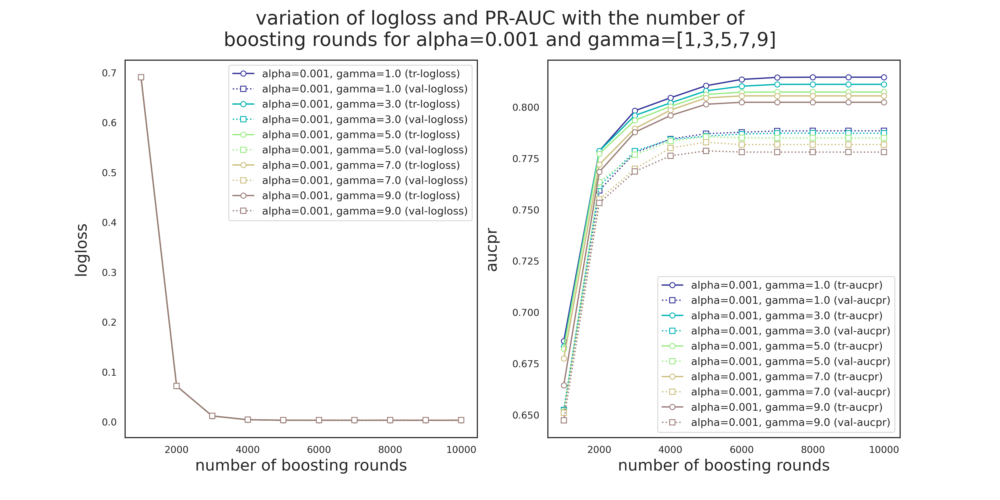
Variation of logloss and PR-AUC for gamma=3 and different values of alpha
fig = plt.figure(dpi=280, figsize=(16,8))
num_folds = 20
test_params = {'alpha': np.logspace(-6,0,3), 'gamma':[3]}
test_evals = [evals[i] for i in [6,7,8]]
metrics = ['logloss','aucpr']
num_cases = len(list(product(*test_params.values())))
colors=[plt.cm.jet(int(i/num_cases*256)) for i,_ in enumerate(product(*test_params.values()))]
step=1000
num_trees=10000
for j,metric in enumerate(metrics):
ax = fig.add_subplot(1,2,j+1)
for i,(alpha,gamma) in enumerate(product(*test_params.values())):
eval_tr = np.mean(np.asarray([test_evals[i][x]['train'][metric] for x in range(num_folds)]), axis=0)[::step]
eval_val = np.mean(np.asarray([test_evals[i][x]['eval'][metric] for x in range(num_folds)]), axis=0)[::step]
len_eval = len(np.mean(np.asarray([test_evals[i][x]['train'][metric] for x in range(num_folds)]), axis=0))
x_data = np.arange(1,len(eval_tr)+1)*step
ax.plot(x_data, eval_tr,
marker='o', markersize=6,
markerFaceColor='white',
color=colors[i],
label=f"alpha={alpha}, gamma={gamma} (tr-{metric})")
ax.plot(x_data, eval_val,
marker='s', markersize=6,
markerFaceColor='white',
color=colors[i], linestyle=':',
label=f"alpha={alpha}, gamma={gamma} (val-{metric})")
ax.set_xlabel('number of boosting rounds', fontsize=18)
ax.set_ylabel(f'{metric}', fontsize=18, labelpad=15)
legend_loc = {0:'upper', 1:'lower'}.get(j)
ax.legend(loc=f"{legend_loc} right",fontsize=12)
plt.suptitle('variation of logloss and PR-AUC with the number of\n' +
'boosting rounds for alpha=[1e-6,1e-3,1] and gamma=3',
fontsize=22)
plt.show()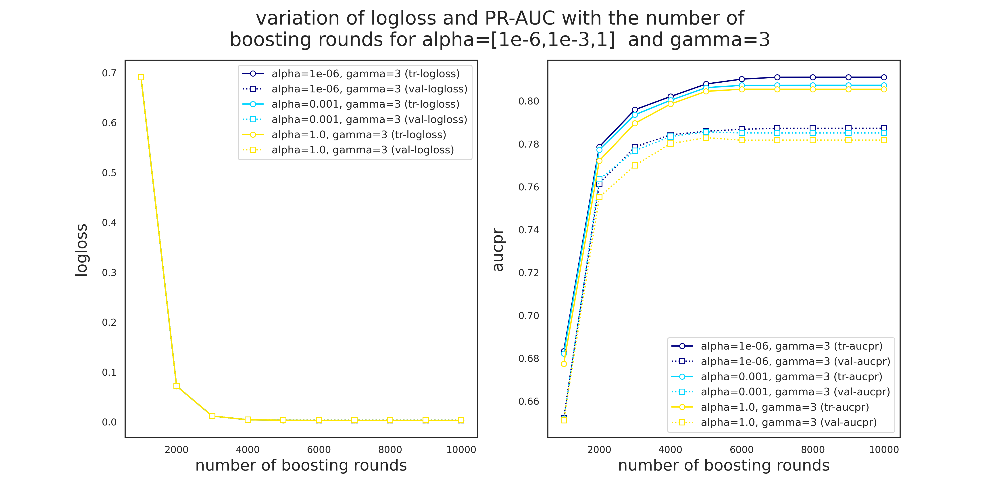
There are a few observations to make from Figures 4 and 5.
- Unlike Pr-AUC, Logloss is insensitive to the variation of
alphaandgamma. This is most likely due to the severe imbalance of the classes. While PR-AUC is sensitive to imbalance, logloss is about the model's confidence in predicting the correct class, be it positive or negative. - Validation PR-AUC reaches its peak somewhere around 5000 trees followed by a slight reduction and then it plateaus. Train PR-AUC on the other hand is strictly increasing. This causes the gap between the training and validation PR-AUC to increase, i.e., overitting.
- Model is more sensitive to the variation of
gammathanalpha. - 5000 seems to be a safe maximum for the number of boosting rounds.
gamma=3 and alpha=1e-3 to the next round of grid search.
cur_params = tmp_df[tmp_df['diff']<threshold].sort_values('val_avg', ascending=False)['current_params'].iloc[1]Gridsearch for parameter group 4: scale_pos_weight
scale_pos_weight controls the balance of positive and negative weights which is specifically useful when dealing with highly imbalanced cases. A typical value to consider is sum(negative instances)/sum(positive instances), i.e.
from collections import Counter
counter = Counter(df['Class'])
print(f'Class distribution of the response variable: {counter}')
print(f'Majority and minority classes correspond to {100*counter[0]/(counter[0]+counter[1]):.3f}% ',
f'and {100*counter[1]/(counter[0]+counter[1]):.3f}% of the data, respectvively,',
f'\nwith positive-to-negative-ratio = {counter[0]/counter[1]:.1f}')Class distribution of the response variable: Counter({0: 284315, 1: 492})
Majority and minority classes correspond to 99.827% and 0.173% of the data, respectvively,
with positive-to-negative-ratio = 577.9
Therefore, we make sure that this ratio or a value close to it is included in our hyperparameter candidates for scale_pos_weight.
pprint(cur_params){'alpha': 0.001,
'colsample_bylevel': 1,
'colsample_bytree': 1,
'eval_metric': 'aucpr',
'gamma': 3,
'learning_rate': 0.002,
'max_depth': 3,
'min_child_weight': 30,
'objective': 'binary:logistic',
'scale_pos_weight': 1,
'subsample': 1,
'tree_method': 'gpu_hist'}
Note: the only reason to include scale_pos_weight=0.5 in the parameter search is to observe the model behavior.
search_params = param_group_4
cur_params.update(search_params)
pprint(cur_params){'alpha': 0.001,
'colsample_bylevel': 1,
'colsample_bytree': 1,
'gamma': 3,
'learning_rate': 0.002,
'max_depth': 3,
'min_child_weight': 30,
'scale_pos_weight': [0.5, 1, 2, 5, 10, 20, 50, 100, 500 ,1000],
'subsample': 1}
tmp_df, evals = cv_search_params(X_train, y_train, cur_params, all_features, rskf)
tmp_df.to_pickle('hyperparams_round4.pkl') Grid search started at 2021-05-31 14:23:33.726916
Total number of hyperparameter candidates = 10
CV 1 on:
{'scale_pos_weight': 0.5}
started!
Summary:
mean PR-AUC training = 0.729
mean PR-AUC validation = 0.710
mean PR-AUC difference = 0.0191
CV 1 ended! (took 178.08 seconds)
CV 2 on:
{'scale_pos_weight': 1.0}
started!
Summary:
mean PR-AUC training = 0.788
mean PR-AUC validation = 0.772
mean PR-AUC difference = 0.0161
CV 2 ended! (took 260.34 seconds)
CV 3 on:
{'scale_pos_weight': 2.0}
started!
Summary:
mean PR-AUC training = 0.815
mean PR-AUC validation = 0.787
mean PR-AUC difference = 0.0281
CV 3 ended! (took 312.25 seconds)
CV 4 on:
{'scale_pos_weight': 5.0}
started!
Summary:
mean PR-AUC training = 0.829
mean PR-AUC validation = 0.803
mean PR-AUC difference = 0.0281
CV 4 ended! (took 344.57 seconds)
CV 5 on:
{'scale_pos_weight': 10.0}
started!
Summary:
mean PR-AUC training = 0.832
mean PR-AUC validation = 0.801
mean PR-AUC difference = 0.0311
CV 5 ended! (took 299.70 seconds)
CV 6 on:
{'scale_pos_weight': 50.0}
started!
Summary:
mean PR-AUC training = 0.829
mean PR-AUC validation = 0.801
mean PR-AUC difference = 0.0281
CV 6 ended! (took 277.62 seconds)
CV 7 on:
{'scale_pos_weight': 100.0}
started!
Summary:
mean PR-AUC training = 0.762
mean PR-AUC validation = 0.739
mean PR-AUC difference = 0.0241
CV 7 ended! (took 213.36 seconds)
CV 8 on:
{'scale_pos_weight': 500.0}
started!
Summary:
mean PR-AUC training = 0.754
mean PR-AUC validation = 0.731
mean PR-AUC difference = 0.0231
CV 8 ended! (took 195.64 seconds)
CV 9 on:
{'scale_pos_weight': 10000.0}
started!
Summary:
mean PR-AUC training = 0.749
mean PR-AUC validation = 0.715
mean PR-AUC difference = 0.0341
CV 9 ended! (took 190.46 seconds)
CV 10 on:
{'scale_pos_weight': }
started!
Summary:
mean PR-AUC training = 0.759
mean PR-AUC validation = 0.722
mean PR-AUC difference = 0.0361
CV 10 ended! (took 448.14 seconds)
Grid search ended at 2021-05-31 15:21:49.174025
tmp_df[tmp_df['diff']<acceptance_threshold] \
.sort_values('val_avg', ascending=False) \
.head()| current_params | tr_avg | tr_std | val_avg | val_std | numtrees_avg | numtrees_std | diff | time_taken | |
|---|---|---|---|---|---|---|---|---|---|
| 1 | {'max_depth': 3, 'min_child_weight': 30, 'subs... | 0.777 | 0.014 | 0.765 | 0.037 | 307.913 | 301.897 | 0.011 | 0:03:26 |
| 0 | {'max_depth': 3, 'min_child_weight': 30, 'subs... | 0.702 | 0.013 | 0.690 | 0.048 | 91.575 | 169.184 | 0.012 | 0:02:14 |
Note that only two of the search candidates for scale_pos_weight satisfy the acceptance condition.
[x['scale_pos_weight'] for x in tmp_df[tmp_df['diff']<acceptance_threshold] \
['current_params']][0.5, 1]
This is surprising because we expected a value close to sum(negative instances)/sum(positive instances) giving the best model performance. Looking at the variation of evaluation metric with might give us a hint about what might have gone wrong. Plotting the evolution of eval_metric with scale_pos_weight may reveal some more details regarding this discrepancy.
fig = plt.figure(dpi=280, figsize=(8, 8))
ax = fig.add_subplot(111)
labels = []
x_data = [np.log10(x['scale_pos_weight']) for x in tmp_df['current_params']]
colors = ['dodgerblue', 'lightsalmon','forestgreen']
labs = ['train', 'validation']
avgs = ['tr_avg', 'val_avg']
stds = ['tr_std', 'val_std']
stdev_labs = [r'$\pm$ 1 std. dev. (train)', r'$\pm$ 1 std. dev. (validation)']
axes = []
for i, _ in enumerate(avgs):
axes.append(ax.plot(x_data, tmp_df[avgs[i]], marker='o', color=colors[i], label=labs[i]))
for i, _ in enumerate(avgs):
axes.append(ax.fill_between(x_data,
tmp_df[avgs[i]]-tmp_df[stds[i]],
tmp_df[avgs[i]]+tmp_df[stds[i]],
color=colors[i], alpha=.3, label=stdev_labs[i]))
# diff
ax.fill_between(x_data, tmp_df['tr_avg'], tmp_df['val_avg'], color='none',
hatch="XXX", edgecolor="b", linewidth=0.0, alpha=.6)
offset_coef = 0.5
ax.set_xlim([min(x_data), max(x_data)])
ax.set_xlabel('$\log(\mathrm{scale\_pos\_weight})$', fontsize=14, labelpad=20)
ax.set_ylabel('PR-AUC', fontsize=14, labelpad=20)
ax_min = min(min(tmp_df['tr_avg']-tmp_df['tr_std']), min(tmp_df['val_avg']-tmp_df['val_std']))
ax_max = max(max(tmp_df['tr_avg']+tmp_df['tr_std']), max(tmp_df['val_avg']+tmp_df['val_std']))
ax.set_ylim(ax_min-offset_coef*(ax_max-ax_min), ax_max+offset_coef*(ax_max-ax_min))
# plot number of boosting trees
# initiate a second axes that shares the same x-axis
ax2 = ax.twinx()
ax2.set_ylabel('Number of boosting trees',fontsize=14, labelpad=20)
axes.append(ax2.plot(x_data, tmp_df['numtrees_avg'], marker='1',linewidth=2,
markersize=10, linestyle=':',color=colors[2],
label='average number of boosting trees'))
ax2.tick_params(axis='y')
ax2_min = min(tmp_df['numtrees_avg'])
ax2_max = max(tmp_df['numtrees_avg'])
ax2.set_ylim(ax2_min-offset_coef*(ax2_max-ax2_min), ax2_max+offset_coef*(ax2_max-ax2_min))
# fix legend
axes_ = [a[0] if isinstance(a, list) else a for a in axes]
labels = [lab.get_label() for lab in axes_]
ax.legend(axes_, labels, fontsize=10, loc='upper right')
# title
plt.title('The difference between training and validation PR-AUC for\n'+
'different values of XGBoost\'s scale_pos_weight parameter',
fontsize=16)
fig.tight_layout()
plt.show()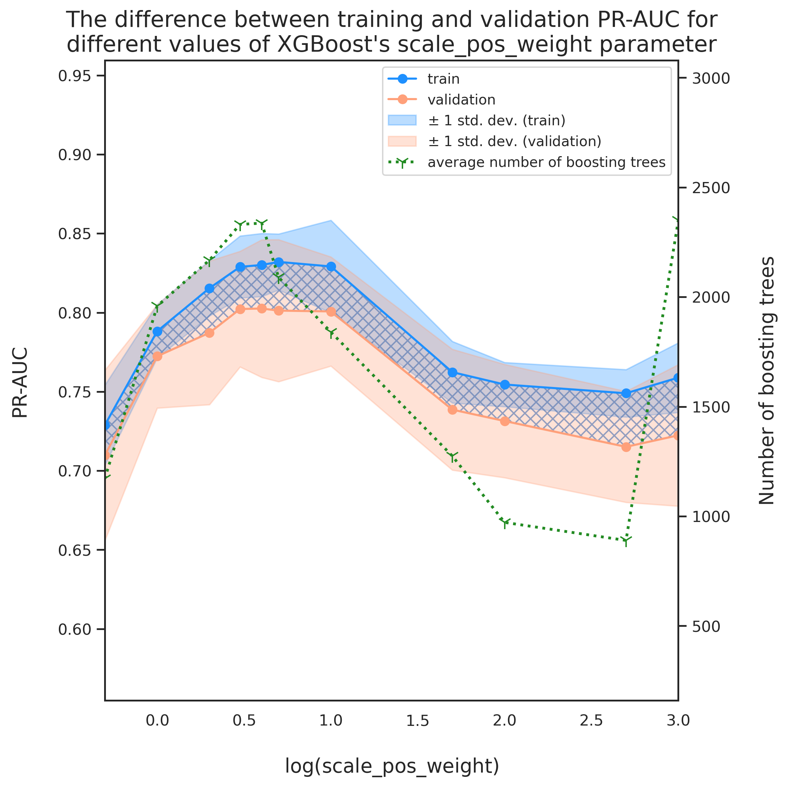
Looking at Figure 6 above, we note that the scale_pos_weight values 10 an. We also observe that the deviation between the model performance on training versus validation data increases with the increase in scale_pos_weight. The increase in the width of the hatched region shows this deviation and we can see that for $\log(\mathrm{scale\_pos\_weight})\geq1$ the model is starting to overfit. The fact that the model does not demonstrate its best performance at XGBoost's recommended value should not be too concerning as these are general recommendations which can change with the imbalance ratio, the nature of data, the train-to-validation ratio, etc. Finally, we can see that there might be a scale_pos_weight value bigger than $1$ that demonstrates a better performance than scale_pos_weight=1 while satisfying the acceptance condition. We can explore this by performing another round of parameter search over a much smaller window as below.
param_group_4_new = {'scale_pos_weight': np.linspace(1,2,6)}
search_params = param_group_4_new
cur_params.update(search_params)
pprint(cur_params){'alpha': 0.001,
'colsample_bylevel': 1,
'colsample_bytree': 1,
'gamma': 3,
'learning_rate': 0.002,
'max_depth': 3,
'min_child_weight': 30,
'scale_pos_weight': array([1. , 1.2, 1.4, 1.6, 1.8, 2.]),
'subsample': 1}
tmp_df, evals = cv_search_params(X_train, y_train, cur_params, all_features, rskf)
tmp_df.to_pickle('hyperparams_round4_new.pkl')Grid search on:
{'alpha': 0.001,
'colsample_bylevel': 1,
'colsample_bytree': 1,
'gamma': 3,
'learning_rate': 0.002,
'max_depth': 3,
'min_child_weight': 30,
'scale_pos_weight': array([1.0, 1.2, 1.4, 1.6, 1.8, 2.0]),
'subsample': 1}
started at 2021-06-07 15:07:46.962607
Total number of hyperparameter candidates = 6
CV 1 on:
{'scale_pos_weight': 1.0}
started!
Summary:
mean PR-AUC training = 0.788
mean PR-AUC validation = 0.772
mean PR-AUC difference = 0.0167
average number of boosting rounds tr = 1958
CV 1 ended! (took 260.34 seconds)
CV 2 on:
{'scale_pos_weight': 1.2}
started!
Summary:
mean PR-AUC training = 0.794
mean PR-AUC validation = 0.778
mean PR-AUC difference = 0.0158
average number of boosting rounds tr = 1947
CV 2 ended! (took 258.66 seconds)
CV 3 on:
{'scale_pos_weight': 1.4}
started!
Summary:
mean PR-AUC training = 0.794
mean PR-AUC validation = 0.773
mean PR-AUC difference = 0.0203
average number of boosting rounds tr = 1425
CV 3 ended! (took 220.09 seconds)
CV 4 on:
{'scale_pos_weight': 1.6}
started!
Summary:
mean PR-AUC training = 0.799
mean PR-AUC validation = 0.777
mean PR-AUC difference = 0.0225
average number of boosting rounds tr = 1450
CV 4 ended! (took 212.62 seconds)
CV 5 on:
{'scale_pos_weight': 1.8}
started!
Summary:
mean PR-AUC training = 0.807
mean PR-AUC validation = 0.780
mean PR-AUC difference = 0.0266
average number of boosting rounds tr = 1835
CV 5 ended! (took 257.85 seconds)
CV 6 on:
{'scale_pos_weight': 2.0}
started!
Summary:
mean PR-AUC training = 0.815
mean PR-AUC validation = 0.787
mean PR-AUC difference = 0.0282
average number of boosting rounds tr = 2168
CV 6 ended! (took 312.25 seconds)
Grid search ended at 2021-06-07 15:23:36.177770
fig = plt.figure(dpi=280, figsize=(8, 8))
ax = fig.add_subplot(111)
labels = []
x_data = [x['scale_pos_weight'] for x in tmp_df['current_params']]
colors = ['dodgerblue', 'lightsalmon','forestgreen']
labs = ['train', 'validation']
avgs = ['tr_avg', 'val_avg']
stds = ['tr_std', 'val_std']
stdev_labs = [r'$\pm$ 1 std. dev. (train)', r'$\pm$ 1 std. dev. (validation)']
axes = []
for i, _ in enumerate(avgs):
axes.append(ax.plot(x_data, tmp_df[avgs[i]], marker='o', color=colors[i], label=labs[i]))
for i, _ in enumerate(avgs):
axes.append(ax.fill_between(x_data,
tmp_df[avgs[i]]-tmp_df[stds[i]],
tmp_df[avgs[i]]+tmp_df[stds[i]],
color=colors[i], alpha=.3, label=stdev_labs[i]))
# diff
ax.fill_between(x_data, tmp_df['tr_avg'], tmp_df['val_avg'], color='none',
hatch="XXX", edgecolor="b", linewidth=0.0, alpha=.6)
offset_coef = 0.5
ax.set_xlim([min(x_data), max(x_data)])
ax.set_xlabel('scale_pos_weight', fontsize=14)
ax.set_ylabel('PR-AUC', fontsize=14)
ax_min = min(min(tmp_df['tr_avg']-tmp_df['tr_std']), min(tmp_df['val_avg']-tmp_df['val_std']))
ax_max = max(max(tmp_df['tr_avg']+tmp_df['tr_std']), max(tmp_df['val_avg']+tmp_df['val_std']))
ax.set_ylim(ax_min-offset_coef*(ax_max-ax_min), ax_max+offset_coef*(ax_max-ax_min))
# plot number of boosting trees
# initiate a second axes that shares the same x-axis
ax2 = ax.twinx()
ax2.set_ylabel('Number of boosting trees')
axes.append(ax2.plot(x_data, tmp_df['numtrees_avg'], marker='1',linewidth=2,
markersize=10, linestyle=':',color=colors[2],
label='average number of boosting trees'))
ax2.tick_params(axis='y')
ax2_min = min(tmp_df['numtrees_avg'])
ax2_max = max(tmp_df['numtrees_avg'])
ax2.set_ylim(ax2_min-offset_coef*(ax2_max-ax2_min), ax2_max+offset_coef*(ax2_max-ax2_min))
# fix legend
axes_ = [a[0] if isinstance(a, list) else a for a in axes]
labels = [lab.get_label() for lab in axes_]
ax.legend(axes_, labels, fontsize=10, loc='upper left')
# title
plt.title('The difference between training and validation PR-AUC for\n'+
'different values of XGBoost\'s scale_pos_weight parameter',
fontsize=16)
fig.tight_layout()
plt.show()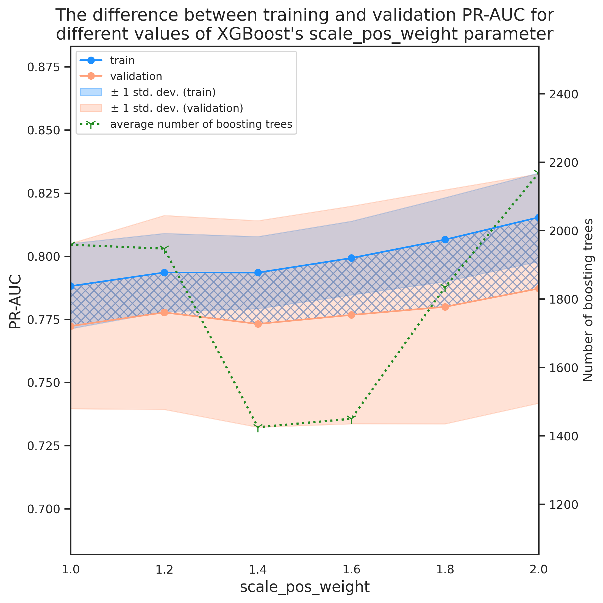
tmp_df[tmp_df['diff']<acceptance_threshold] \
.sort_values('val_avg', ascending=False) \
.head()| current_params | tr_avg | tr_std | val_avg | val_std | numtrees_avg | numtrees_std | diff | time_taken | |
|---|---|---|---|---|---|---|---|---|---|
| 1 | {'max_depth': 3, 'min_child_weight': 30, 'subs... | 0.794 | 0.016 | 0.778 | 0.038 | 1958.311 | 1139.170 | 0.016 | 258.66 |
| 0 | {'max_depth': 3, 'min_child_weight': 30, 'subs... | 0.788 | 0.016 | 0.772 | 0.037 | 1947.413 | 1279.757 | 0.011 | 260.34 |
tmp_df[tmp_df['diff']<acceptance_threshold] \
.sort_values('val_avg', ascending=False) \
.iloc[0]['current_params']['scale_pos_weight']1.2
Note how this little change of scale_pos_weight from 1 to 1.2 improves the validation PR-AUC by roughly 1$\%$. This shows how important this hyperparameter is especially when dealing with highly imbalanced datasets.
Important note regarding overfitting and the acceptance threshold
Looking at the figure above, one might ask why we limited ourselves to acceptance condition? For instance, taking scale_pos_weight to be 3 rather than 1.2 increases the average train and validation PR-AUC by roughly 4$\%$ while the difference between the two is only about 0.7$\%$ above the acceptance threshold. This is a great question and in fact, some would characterize over fitting as a situation where increasing the complexity of the model slightly tends to increase the validation error, e.g. $\log(\mathrm{scale\_pos\_weight})>1$ in Figure6. There is no good answer to questions like this as the answer might change depending on the business objectives, computational resources, etc. The important thing here is to make sure that we understand the reasoning behind eliminating or accepting some candidates. I performed a similar analysis to previous round of grid search by repeating the grid search for scale_pos_weight with no early stopping.
Variation of logloss and PR-AUC for scale_pos_weight=[1,5,20,100,1000]
fig = plt.figure(dpi=280, figsize=(16, 8))
num_folds = 20
test_params = {'scale_pos_weight': [0.5, 1, 2, 5, 10, 20, 50, 100, 500, 1000][1::2]}
test_evals = evals[1::2]
metrics = ['logloss','aucpr']
num_cases = len(list(product(*test_params.values())))
colors=[plt.cm.jet(int(i/num_cases*256)) for i,_ in enumerate(product(*test_params.values()))]
step=1000
num_trees=10000
for j,metric in enumerate(metrics):
ax = fig.add_subplot(1,2,j+1)
for i,(scale_pos_weight) in enumerate(product(*test_params.values())):
eval_tr = np.mean(np.asarray([test_evals[i][x]['train'][metric] for x in range(num_folds)]), axis=0)[::step]
eval_val = np.mean(np.asarray([test_evals[i][x]['eval'][metric] for x in range(num_folds)]), axis=0)[::step]
len_eval = len(np.mean(np.asarray([test_evals[i][x]['train'][metric] for x in range(num_folds)]), axis=0))
x_data = np.arange(1,len(eval_tr)+1)*step
ax.plot(x_data, eval_tr,
marker='o', markersize=6,
markerFaceColor='white',
color=colors[i],
label=f"scale_pos_weight={scale_pos_weight[0]} (tr-{metric})")
ax.plot(x_data, eval_val,
marker='s', markersize=6,
markerFaceColor='white',
color=colors[i], linestyle=':',
label=f"scale_pos_weight={scale_pos_weight[0]} (val-{metric})")
ax.set_xlabel('number of boosting rounds', fontsize=18)
ax.set_ylabel(f'{metric}', fontsize=18, labelpad=15)
legend_loc = {0:'upper', 1:'lower'}.get(j)
ax.legend(loc=f"{legend_loc} right",fontsize=12)
plt.suptitle('Variation of logloss and PR-AUC with the number of\n' +
'boosting rounds for scale_pos_weight=[1,5,20,100,1000]',
fontsize=22)
plt.show()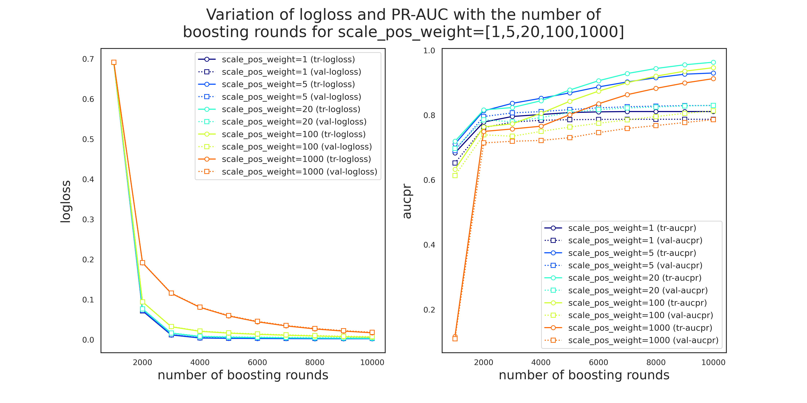
- Notice that the reduction in logloss slows down for the higher values of
scale_pos_weight. I believe that the possible reson behind this behavior is the model up samples the fraudulent class, i.e., repeats the positive instancesscale_pos_weighttimes to make it a balanced problem but since the positive class is generally harder to predict, it requires a higher number of boosting rounds for the logloss to reduce. - Note that until around 2000 boosting rounds, the training and validation PR-AUC improve simultaneously and roughly with the same rate. In this period,
scale_pos_weight=5demonstrates a superior performance compared to other values.
Nevertheless, we stick to the rule that we initially defined and move forward with scale_pos_weight=1.2.
Gridsearch for parameter group 5: learning_rate
The last step in our hyperparameter grid search is tuning the learning rate where we explore 11 learning rates in the range (0.0001, 0.01). Furthermore, to study the effect of Early_Stop_Rounds in more detail, we repeat the grid search for multiple values of Early_Stop_Rounds. This can help us to understand the benefits and potential disadvantages of using Early_Stop_Rounds. We also keep track of 'error' in addition to aucpr and logloss to see if we can get more insights about the evolution of eval_metrics with the grid search parameter. Finally, we increase the maximum number of boosting rounds to 10000.
cur_params.update({'scale_pos_weight': 1.2})
search_params = param_group_5
cur_params.update(search_params)
pprint(cur_params)
{'alpha': 0.001,
'colsample_bylevel': 1,
'colsample_bytree': 1,
'gamma': 3,
'learning_rate': array([0.0001 , 0.00015849, ..., 0.00630957, 0.01]),
'max_depth': 3,
'min_child_weight': 30,
'scale_pos_weight': 1.2,
'subsample': 1}
Evolution of eval_metrics with the number of boosting rounds and learning_rate
dfs = []
early_stoppng_values = [200, 400, 1000, 2000, 5000, 10000]
for i, es in enumerate(early_stoppng_values):
tmp_df, evals = cv_search_params(X_train, y_train, cur_params, all_features, \
rskf, eval_metric=['error','logloss','aucpr'], \
num_boost_rounds=10000, early_stop_rounds=es)
tmp_df['early_stop'] = es
with open('hyperparam5_{es}_evals.pkl', 'wb') as pickle_file:
pickle.dump(evals, pickle_file, protocol=4)
tmp_df.to_pickle('hyperparam5_{es}_df.pkl')
dfs.append(tmp_df)
First, we look at the variation of average error, logloss, and aucpr for training and validation data when there is no early stopping.
fig,axes = plt.subplots(3,1,dpi=280, figsize=(10,12), sharex=True)
sns.axes_style('white')
sns.set(rc={'axes.facecolor':'lightgray', 'figure.facecolor':'white'})
num_folds = 20
test_params = {}
test_params['learning_rate'] = np.logspace(-4, -2, 11)[::2]
fig.tight_layout()
test_evals = eevals[::2]
metrics = ['error','logloss','aucpr']
num_cases = len(list(product(*test_params.values())))
colors=[plt.cm.jet(int(i/num_cases*256)) for i,_ in enumerate(product(*test_params.values()))]
step=250
ylims = [[6.1e-4, 7.7e-4],[-0.05, 0.75],[0.67, 0.83]]
plt.subplots_adjust(hspace=0.02)
for j,metric in enumerate(metrics):
for i,lr in enumerate(product(*test_params.values())):
ax = axes[j]
eval_tr = np.mean(np.asarray([test_evals[i][x]['train'][metric] for x in range(num_folds)]),
axis=0)[::step]
eval_val = np.mean(np.asarray([test_evals[i][x]['eval'][metric] for x in range(num_folds)]),
axis=0)[::step]
len_eval = len(np.mean(np.asarray([test_evals[i][x]['train'][metric] for x in range(num_folds)]),
axis=0))
x_data = np.arange(1,len(eval_tr)+1)*step
ax.plot(x_data, eval_tr,
marker='o', markersize=6,
markerFaceColor='white',
color=colors[i],
label=f"LR={lr[0]:.2e} (tr-{metric})")
ax.plot(x_data, eval_val,
marker='s', markersize=6,
markerFaceColor='white',
color=colors[i], linestyle=':',
label=f"LR={lr[0]:.2e} (val-{metric})")
sns.despine(left=False)
ax.set_ylim(ylims[j])
if j==1:
ax.legend(bbox_to_anchor=(1,0.5,0,0),loc=f"center left",fontsize=10)
ax.set_ylabel(f'{metric}', fontsize=18, labelpad=15)
plt.suptitle('Variation of error, logloss, and aucpr for training and validation\n' +
'with the number of boosting rounds with learning rate', y=1.04,
fontsize=22)
plt.xlabel('number of boosting rounds', fontsize=18, labelpad=10)
plt.show();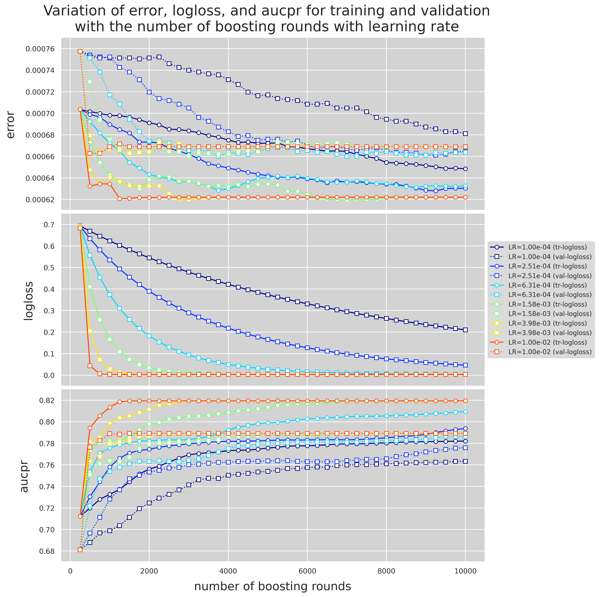
There are some interesting observations to point out in Figure 9
-
All evaluation metric for the higher learning rates, i.e.,
lr=1e-2, 3.98e-3, remain unchanged after $n_{\text{tree}}\approx3000$. This means adding more complexity to the model does not imprpove the performance of the model. -
In contrast, when looking at the results for
lr=2.5e-4, we notice that even at a much higher number of boosting rounds, the validation metrics are still improving. -
For the really low values of learning rate, i.e.,
lr=1e-4, the model is certainly underfitting as all the evaluation metrics are still improving at $n_{\text{tree}}\approx10000$. -
The higher the learning rate gets, the sooner the model starts to overfit. This can be seen by looking at the error and aucpr subplots in Figure 9 where for the highest learning rate (
lr=0.01), the divergence between the training and validation data results start at the very beginning where $n_{\text{tree}}\approx250$.
How Early Stopping influences the optimal learning_rate
We now look at the way using Early Stopping affects the computation cost, the best learning rate accorading to the criteria discussed previously, and whether or not that might affect the accuracy of the model. Note that the size of markers in Figure 10 are scaled by the square-root of the time taken to train the model.
fig,ax = plt.subplots(1,1,dpi=400, figsize=(15,15))
sns.axes_style('white')
sns.set(rc={'axes.facecolor':'lightgray', 'figure.facecolor':'white'})
x_data = np.logspace(-4, -2, 11)
num_case = len(early_stoppng_values)
metric='aucpr'
colors=[plt.cm.jet(int(i/num_cases*256)) for i,_ in enumerate(early_stoppng_values)]
for i,es in enumerate(early_stoppng_values):
y_data = dfs[i].iloc[:,1] # train
# scale the plot markers by the square root of the time taken
time_taken = np.sqrt(dfs[i].iloc[:,8].astype(float))*3
ax.plot(x_data, y_data,
marker=None,
color=colors[i], linestyle=':')
ax.scatter(x_data, y_data,
marker='o', s=time_taken,
color=colors[i],
label=f"Estop={es} (tr-{metric})", zorder=-i+10)
y_data = dfs[i].iloc[:,3] # validation
ax.plot(x_data, y_data,
marker=None,
color=colors[i], linestyle=':')
ax.scatter(x_data, y_data,
marker='d', s=time_taken,
color=colors[i], linestyle=':',
label=f"Estop={es} (val-{metric})", zorder=-i+10)
sns.despine(left=False)
ax.set_xscale('log')
ax.set_ylabel(f'aucpr', fontsize=22, labelpad=15)
plt.suptitle('Variation of aucpr for training and validation data for different\n' +
'learning rates and different values of early stopping', y=0.95,
fontsize=28)
plt.setp(ax.get_xticklabels(), fontsize=18)
plt.setp(ax.get_yticklabels(), fontsize=18)
plt.legend(bbox_to_anchor=(1,0.5,0,0),loc=f"center left",fontsize=14)
plt.xlabel('learning rate', fontsize=22)
plt.show()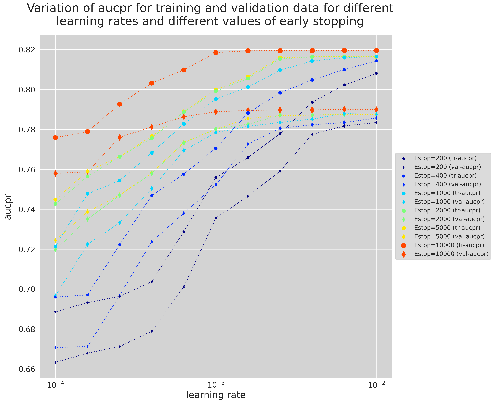
Figure 10 shed light on choosing the best number of trees as the Early Stopping criteria.
- The lower Early Stopping means the less computation cost. This can clearly be seen by the increase in the markers' size as the Early Stopping increases.
-
Notice that there is a bottleneck in all training-validation-pair curves for each Early Stop value where the training and validation aucpr are the closest. For instance for
Estop=200, the bottleneck occurs atlr=2.5e-4whereas forEstop=2000, it occurs atlr=6.51e-4. -
Comparing the training and validation curves for
(Estop=200, lr=2.51e-3)and(Estop=10000, lr=2.51e-4) with roughly the same performance for the training and validation PR-AUC. Notice that early stopping can significantly reduce the computation cost as the first case takes 107 seconds whereas the second case takes 1409 seconds. An almost 14 folds increase in the compuation cost.
Finally, we can take a look at all the learning rates that meet the Acceptance Condition.
for i,es in enumerate(early_stoppng_values):
dfs[i]['early_stop'] = es
dfs[i]['learning_rate'] = 0
for j in range(len(dfs[i])):
dfs[i]['learning_rate'].iloc[j]=f"{dfs[i]['current_params'].iloc[j]['learning_rate']:.2e}"
df_es = pd.concat(dfs, axis=0)
df_es = df_es[df_es['diff']<acceptance_threshold].sort_values('val_avg', ascending=False)
df_es = df_es.reset_index(drop=True)
df_es[['tr_avg','val_avg','time_taken','early_stop','learning_rate']].iloc[:,:10]| tr_avg | val_avg | numtrees_avg | time_taken | early_stop | learning_rate | |
|---|---|---|---|---|---|---|
| 0 | 0.801 | 0.782 | 3227.400 | 438.81 | 1000 | 1.58e-03 |
| 1 | 0.798 | 0.781 | 1963.000 | 285.39 | 400 | 2.51e-03 |
| 2 | 0.800 | 0.780 | 5000.000 | 556.59 | 5000 | 1.00e-03 |
| 3 | 0.799 | 0.780 | 4220.050 | 529.53 | 2000 | 1.00e-03 |
| 4 | 0.795 | 0.778 | 3801.550 | 482.29 | 1000 | 1.00e-03 |
| 5 | 0.794 | 0.778 | 985.150 | 138.15 | 200 | 3.98e-03 |
| 6 | 0.793 | 0.776 | 10000.000 | 1409.15 | 10000 | 2.51e-04 |
| 7 | 0.789 | 0.773 | 5000.000 | 551.06 | 5000 | 6.31e-04 |
| 8 | 0.789 | 0.773 | 4322.450 | 539.58 | 2000 | 6.31e-04 |
| 9 | 0.788 | 0.773 | 1848.850 | 263.90 | 400 | 1.58e-03 |
Note that the value that we chose for Early Stopping gives the second best performance among all the combinations with only 0.1% lower accuracy than the best performance for val_avg. However, it takes rouhgly half the time that takes to train a model with (Estop=400, lr=2.51e-3) than the time that takes to train using (Estop=1000, lr=1.58e-3). We keep the early stopping value to be $400$ and move on to the last part of the project with lr=2.51e-3.
Plotting the PR curves and finding the best threshold for the winner model
In this part, we will find the threshold that gives the best balance of precision and recall. In addition, we plot the precision-recall curve for the training, validation, and test data. We could locate the threshold that gives the optimal balance between precision and recall using the Harmonic Mean of the two. Harmonic Mean or H-Mean of precision and recall is called F-measure or F-score which when optimized, will seek a balance between the precision and recall.
$$ \text{F-score} = \frac{2 \times \text{Precision} \times \text{Recall}}{\text{Precision} + \text{Recall}} $$ or $$ \frac{1}{\text{F-score}} = \frac{1}{\dfrac{1}{2}\big(\dfrac{1}{\text{Precision}} + \dfrac{1}{\text{Recall}}\big)} $$
One way to think about why optimizing F-score gives the best balance between precision and recall is that we can not get a high F-score if either one is very low. The threshold that gives the highest F-score is what we're looking for. First thing, we re-evaluate the model using the winner hyperparameters. This time, we also return the clf so that we can make predictions on the test data. Finally, we also need fold_preds so that we can plot the curves.
winner_params = {
'max_depth': 3,
'min_child_weight': 30,
'subsample': 1,
'colsample_bytree': 1,
'colsample_bylevel': 1,
'alpha': 1e-3,
'gamma': 3,
'scale_pos_weight': 1.2,
'learning_rate': 2.51e-3,
}
final_eval_df, evals, fold_preds, clf = cv_summary(X_train, y_train, winner_params, all_features, rskf,
eval_metric=['logloss','aucpr'], spit_out_fold_results=True,
num_boost_rounds=1963, early_stop_rounds=None, save_fold_preds=True)Repeat 1, Fold 1 - PR-AUC tr = 0.807, PR-AUC vl = 0.776 (diff = 0.0314) Repeat 1, Fold 2 - PR-AUC tr = 0.809, PR-AUC vl = 0.748 (diff = 0.0611) Repeat 1, Fold 3 - PR-AUC tr = 0.809, PR-AUC vl = 0.772 (diff = 0.0366) Repeat 1, Fold 4 - PR-AUC tr = 0.786, PR-AUC vl = 0.848 (diff = -0.0613) Repeat 2, Fold 1 - PR-AUC tr = 0.800, PR-AUC vl = 0.787 (diff = 0.0131) Repeat 2, Fold 2 - PR-AUC tr = 0.791, PR-AUC vl = 0.718 (diff = 0.0725) Repeat 2, Fold 3 - PR-AUC tr = 0.816, PR-AUC vl = 0.787 (diff = 0.0291) Repeat 2, Fold 4 - PR-AUC tr = 0.800, PR-AUC vl = 0.800 (diff = -0.0006) Repeat 3, Fold 1 - PR-AUC tr = 0.809, PR-AUC vl = 0.745 (diff = 0.0640) Repeat 3, Fold 2 - PR-AUC tr = 0.811, PR-AUC vl = 0.747 (diff = 0.0637) Repeat 3, Fold 3 - PR-AUC tr = 0.803, PR-AUC vl = 0.802 (diff = 0.0007) Repeat 3, Fold 4 - PR-AUC tr = 0.787, PR-AUC vl = 0.854 (diff = -0.0669) Repeat 4, Fold 1 - PR-AUC tr = 0.809, PR-AUC vl = 0.734 (diff = 0.0756) Repeat 4, Fold 2 - PR-AUC tr = 0.791, PR-AUC vl = 0.771 (diff = 0.0203) Repeat 4, Fold 3 - PR-AUC tr = 0.793, PR-AUC vl = 0.837 (diff = -0.0434) Repeat 4, Fold 4 - PR-AUC tr = 0.802, PR-AUC vl = 0.765 (diff = 0.0375) Repeat 5, Fold 1 - PR-AUC tr = 0.800, PR-AUC vl = 0.774 (diff = 0.0262) Repeat 5, Fold 2 - PR-AUC tr = 0.805, PR-AUC vl = 0.776 (diff = 0.0294) Repeat 5, Fold 3 - PR-AUC tr = 0.797, PR-AUC vl = 0.818 (diff = -0.0212) Repeat 5, Fold 4 - PR-AUC tr = 0.805, PR-AUC vl = 0.782 (diff = 0.0228) Summary: mean PR-AUC training = 0.801 mean PR-AUC validation = 0.782 mean PR-AUC difference = 0.0195
# making predictions on the train and test data
# Winner model parameters
param_dict = {'tree_method':'gpu_hist'
'objective':'binary:logistic'
'eval_metric':'aucpr'}
param_dict.update(winner_params)
# train data into xgb.DMatrix
xg_train = xgb.DMatrix(X_train, feature_names=all_features, label=y_train)
# train
clf = xgb.train(param_dict, xg_train, num_boost_round=1977)
# predict train
y_pred_train = clf.predict(xg_train)
# predict test
y_pred_test = clf.predict(xgb.DMatrix(X_test, feature_names=all_features))
# chnage key names and update with train and test predictions
fold_preds['cv-train'] = fold_preds.pop('train')
fold_preds['cv-val'] = fold_preds.pop('eval')
fold_preds['train'] = [[y_train, y_pred_train]]
fold_preds['test'] = [[y_test, y_pred_test]]
Plotting the PR curves
def col_to_hex(colmap, n):
"""colormap to n hex colors"""
out = []
for i in range(n):
r,g,b,_ = plt.cm.get_cmap(colmap,n)(i)
out.append(f"#{int(r*255):02x}{int(g*255):02x}{int(b*255):02x}")
return out
def f_score(re,pr):
return 2*re*pr/(re+pr)
sns.set(rc={'axes.facecolor':'whitesmoke', 'figure.facecolor':'silver', 'legend.facecolor':'white'})
fig, axes = plt.subplots(4, 1, figsize=(8,30), dpi=150)
axes = axes.flat
dataset_labels = list(fold_preds.keys())
n_divs = 1000
for i,ax in enumerate(axes):
data = fold_preds[dataset_labels[i]]
cols = col_to_hex('tab20', len(data))
aucs = []
pr_interp = []
fs_best_ = []
for j,fold_data in enumerate(data):
y_true = fold_data[0]
y_pred = fold_data[1]
pr, re, thr = precision_recall_curve(y_true,y_pred,pos_label=1)
pr_auc = average_precision_score(y_true,y_pred)
aucs.append(pr_auc)
# approximate AUC
x_range = np.linspace(0, 1, n_divs)
yinterp_pr = np.interp(x_range, re[::-1],pr[::-1])
# threshold = 0.5
thr_50_id = np.where(thr>0.49999)[0][0]
# fs(threshold=0.5)
fs_50 = f_score(re[thr_50_id],pr[thr_50_id])
pr_interp.append(yinterp_pr)
interp_auc= auc(x_range[::-1],yinterp_pr)
# best fs and best threshold
f_scores = [(re[:-1][i],pr[:-1][i],t) for i,t in enumerate(thr)]
best_r, best_p, best_t = sorted(f_scores, key=lambda x: -f_score(x[0],x[1]))[0]
fs_best = f_score(best_r, best_p)
fs_best_.append(fs_best)
# show recall and precision that gives the best fs
if j==0: # cv-train or cv-val
if len(data)>1:
ax.scatter(re[thr_50_id],pr[thr_50_id], s=30, lw=1, marker="x", color='black',label=r'$\theta$=0.5')
else:
ax.scatter(re[thr_50_id],pr[thr_50_id], s=30, lw=1, marker="x", color='black',label=r'$\theta$=0.5 (FS=%.2f)'%(f_score(re[thr_50_id],pr[thr_50_id])))
else: # test or train
ax.scatter(re[thr_50_id],pr[thr_50_id], s=30, lw=1, marker="x", color='black')
# show recall and precision at threshold=0.5
ax.scatter(best_r,best_p, s=30, lw=1, marker="+", color=cols[j], zorder=10)
# plot PR curve
lab = r'AUC=%.2f'%(aucs[-1])
if len(data)>1:
lab += r'(%.2f) - FS$_{\max}$=%.2f($\theta_{\mathrm{best}}$=%.2f)'%(interp_auc,fs_best,best_t)
ax.plot(re,pr,':',linewidth=1, color=cols[j], label=lab, zorder=-1)
if len(data)>1: # cv-train or cv-val
# mean PR curve with std shown by averaging over folds
mean_pr = np.mean(pr_interp, axis=0)
std_pr = np.std(pr_interp, axis=0)
std_auc = np.std(aucs)
precisions_upper = np.minimum(mean_pr + std_pr, 1)
precisions_lower = np.maximum(mean_pr - std_pr, 0)
# AUC of the mean PR curve
mean_prauc = auc(x_range[::-1],mean_pr[::-1])
# plot mean PR curve and add relevant info to the legend
ax.plot(x_range[::-1],mean_pr[::-1],linewidth=2,linestyle='--',
label=r'AUC=%.2f - AUC($\hat{\mathrm{cv}}$)=%.2f $\pm$ %0.3f'%(mean_prauc,np.mean(aucs),np.std(aucs)))
ax.fill_between(x_range[::-1], precisions_lower[::-1], precisions_upper[::-1], color='red', alpha=.2, label=r'$\pm$ 1 std. dev. (precision)')
# best fscore of the mean PR curve
f_scores = [(i, f_score(x_range[::-1][i],pr)) for i,pr in enumerate(mean_pr[::-1])]
else: # test or train
f_scores = [(i, f_score(re[i],pr[i])) for i,_ in enumerate(pr)]
best_id, fs_best = sorted(f_scores, key=lambda x: -x[1])[0]
# annotate the recall and precision that lead to the best fscore and add relevant info to the legend
if len(data)>1: # cv-train or cv-val
ax.scatter(x_range[::-1][best_id], mean_pr[::-1][best_id],s=100,
lw=1, marker="*", color='orange',edgecolor='red', zorder=20,
label=r'FS$_{\max}$=%.2f - FS$_{\max}$($\hat{\mathrm{cv}}$)=%.2f $\pm$ %0.3f'%(fs_best,np.mean(fs_best_),np.std(fs_best_)))
else: # test or train
ax.scatter(re[best_id], pr[best_id],s=100, lw=1, marker="*", color='orange',edgecolor='red',zorder=20,
label=r'FS$_{\max}$=%.2f($\theta_{\mathrm{best}}$=%.2f)'%(fs_best,thr[best_id]))
# perfect classifier
ax.scatter(1, 1, s=20, marker="o", color='green', label='perfect classifier')
ax.plot([0, 1, 1], [1, 1, 0],color='green', linestyle=":", lw=2, alpha=0.6)
# no-skill classifier
no_skill = len(y[y==1]) / len(y) # Taking the positive class to be "fraud"/1
ax.plot([0, 1], [no_skill, no_skill], linestyle='--', lw=1, color='r', label='no-skill classifier')
ax.legend(bbox_to_anchor=(1,1.01,0,0), fontsize=7)
ax.set_xlabel("recall", fontsize=12)
ax.set_ylabel("precision", fontsize=12)
ax.set_title(f"PR curve for {dataset_labels[i]} data", fontsize=20)
plt.show()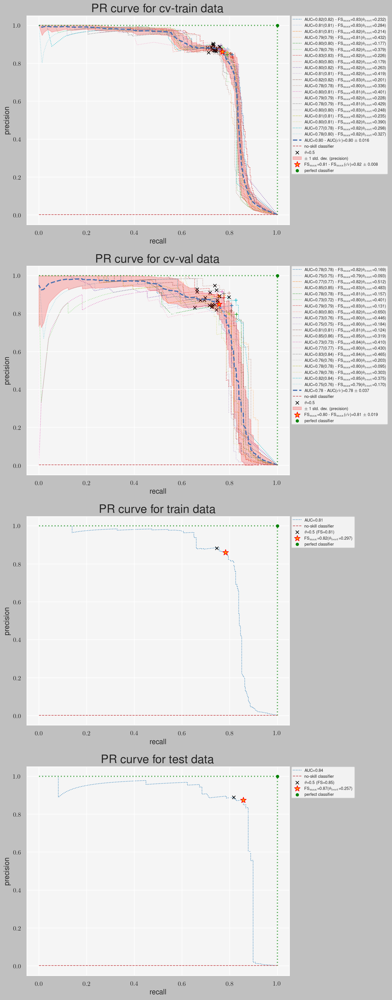
Notes:
- Figure 11 shows the precision-recall curve for
cv-train,cv-val,train, andtest, wherecvdenotes the plots of all the folds in cross-validation folds. - For cv curves, the mean PR curve is calculated by averaging over the folds. Because the number of data points in each fold and the corresponding PR curve is different, these curves are approximated using
np.interp()so that they have the same shape and therefore could be averaged.Area1andArea2in cv plot legendsAUC=Area1(Area2)denote the PR-AUC of the actual and approximated curves, respectively. - For cv curves, the average PR curve is shown using a thick, blue dashed line
- Note that there's a negligible difference between the
- AUC of the approximated curves and the actual curves
- AUC($\hat{\mathrm{cv}}$) (average over cv AUCs) and the AUC of the mean PR curve
- × and colored + (in cv plots) show the precision and recall calculated at $\theta=0.5$ and $\theta=\theta_{\mathrm{best}}$, respectively, where $\theta=\theta_{\mathrm{best}}$ is the threshold that maximizes the F-score. FS$_{\max}$ is the F-score calculated at $\theta=\theta_{\mathrm{best}}$.
- By looking at the cv-val plot, we notice that in some folds, there's a significant drop in precision at threshold values close to 1 (top left). I reproduced those instances in the figure below:
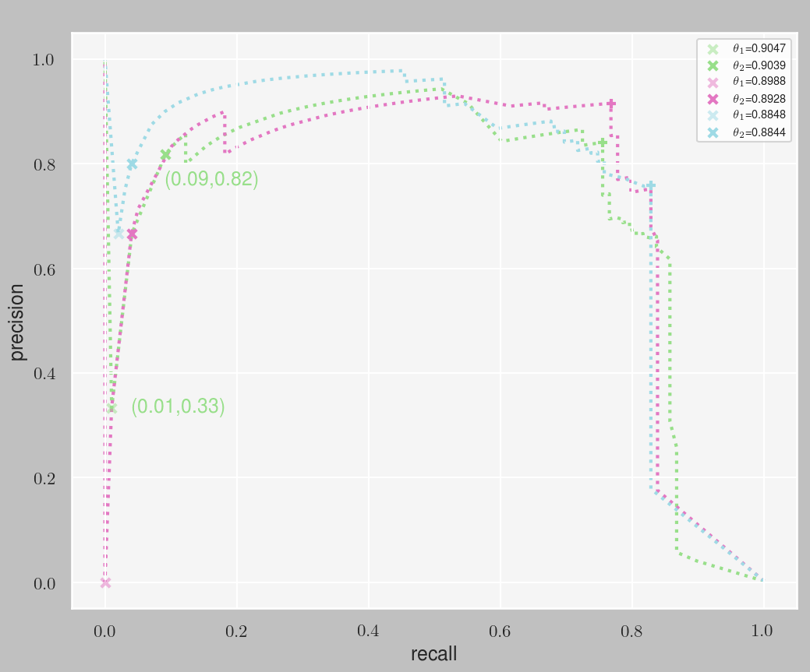
Considering that the positive class includes that fraudulent transactions, this shows that the model is mistakenly classifying a lot of valid transactions as fraud ($\text{FP}$), causing the sudden drop in precision. This can mean that these specific folds contain a lot of observations from the positive class (fraud) that are hard to predict (close to the decision boundary).
For the sake of clarity, let's focus on the green curve in Figure 12 where a slight decrease in threshold from $0.9047$ to $0.9039$ leads to an increase in
$$ \begin{align} \text{Recall}&=\dfrac {\text{TP}}{\text{TP+FN}}\\[2ex] \text{Precision}&=\dfrac {\text{TP}}{\text{TP+FP}} \end{align} $$(recall,precision)from(0.01,0.33)to(0.09,0.82). We can translate this into something even more clear; For every observation $X_i$, model prediction is a probability $p_i$ that measures the chance of $X_i$ belonging to the positive class, where $0 \leq p_i \leq 1$. What $\theta_1=0.9047$ means is that at this threshold, $X_i$ will be classified positive (fraud transaction) only if $p_i>0.9047$ and otherwise it will be classified as negative (valid transaction).The fact that there are roughly 100 positive observations in each fold and the recall value $0.01$ at $\theta_1=0.9047$ means that of the $\approx$100 fraud observations, there's only one observaation that the model can classifiy as fraud with a probability higher than $0.9047$, i.e., $\text{TP}=1$. Noting that $\text{Precision}=0.33\approx \dfrac{1}{3}$, this means $\text{FP}=2$.
Similarly, at the slightly lower threshold $\theta_1=0.9039$, the recall value $0.09$ means that with the new threshold, the model can correctly identify 9 fraud instances $X_j$ with $p_i>0.9039$ while the rest of the fraud observations $X_j$ will be classified as valid because $p_j\leq0.9039$. Noting that $\text{Precision}=0.82\approx \dfrac{9}{11}$, this means that $\text{FP}$ remains unchanged at 2.
Comparison with the baseline model
In this last part, we compare the performance of hypertuned model with that of the baseline model. First, let's take a look at the hyperparameter values of the two models:
| Parameter | Baseline Model | hypertuned Model |
|---|---|---|
n_estimator |
100 | 1963 |
max_depth |
6 | 3 |
min_child_weight |
1 | 30 |
subsample |
1 | 1 |
colsample_bytree |
1 | 1 |
colsample_bylevel |
1 | 1 |
alpha |
0 | 1e-3 |
gamma |
1 | 3 |
scale_pos_weight |
1 | 1.2 |
learning_rate |
0.3 | 2.51e-3 |
Notice that the biggest differences in parameter values are for n_estimators, max_depth, min_child_weight, and learning_rate. We first train and test the baseline model. Next, we apply the best thresholds that we obtained for the training and test data and save them while also saving them using the default threshold $\theta=0.5$. This can shed light on the importance of finding $\theta_{\mathrm{best}}$ that maximizes the F-score. Finally, we make comparisons with the winner model regarding the performance of the models where we use sklearn's classification_report and confusion_matrix as our tools. These comparisons can help us assess how well the winner model parameters generalize and categorize the unseen data.
Training and testing the baseline model
# Baseline model parameters
param_dict = {'tree_method':'gpu_hist'
'objective':'binary:logistic'
'eval_metric':'aucpr'}
# fit and predict baseline
baseline_XGBoost = xgb.XGBClassifier(**param_dict)
baseline_XGBoost.fit(X_train, y_train)
y_pred_train_baseline = baseline_XGBoost.predict(X_train)
y_pred_test_baseline = baseline_XGBoost.predict(X_test)Applying PR curve optial thresholds and isualizing the classification report
First, let's measure aucpr:
preds = [y_pred_train, y_pred_test,
y_pred_train_50, y_pred_test_50,
y_pred_train_baseline, y_pred_test_baseline]
trues = [y_train, y_test]
for i,pred in enumerate(preds):
print(f"{average_precision_score(trues[i%2],pred):.2f}")0.81 0.84 0.66 0.73 1.00 0.81
Next, we apply the best thresholds to the winner model predictions:
# threshold=0.5
y_pred_train_50 = np.round(y_pred_train)
y_pred_test_50 = np.round(y_pred_test)
# apply threshold
y_tr_pred[y_tr_pred<0.297]=0
y_tr_pred[y_tr_pred>=0.297]=1
y_test_pred[y_test_pred<0.257]=0
y_test_pred[y_test_pred>=0.257]=1from sklearn.metrics import classification_report
from matplotlib import gridspec
sns.set(rc={'axes.facecolor':'silver', 'figure.facecolor':'gainsboro', 'legend.facecolor':'white'})
fig = plt.figure(figsize=(12, 12), dpi=80)
gs = gridspec.GridSpec(2, 2, width_ratios=[4, 5]) # because colorbar takes space!
plt.subplots_adjust(left=0, bottom=0, right=1, top=1, wspace=0.1, hspace=0.25)
model_labels = ['hypertuned', 'hypertuned', 'baseline', 'baseline']
dataset_labels = ['train', 'test']*2
observation_labels = ['valid', 'fraud']
preds = [y_pred_train, y_pred_test, y_pred_train_baseline, y_pred_test_baseline]
trues = [y_train, y_test]
cbars = [False, True]
y_ticklabel_visibility = [True, False]
for i,pred in enumerate(preds):
ax = plt.subplot(gs[i])
clf_report = classification_report(trues[i%2], pred, labels=[0, 1], target_names=observation_labels, output_dict=True)
sns.heatmap(pd.DataFrame(clf_report).iloc[:-1, :].T,cmap="gist_heat", vmin=0, vmax=1, annot=True,
annot_kws={'fontsize':'large'}, fmt=".3f", ax=ax, cbar=cbars[i%2],
cbar_kws = dict(use_gridspec=False, location="right"))
ax.set_title(f'{model_labels[i]} model ({dataset_labels[i]} data)', fontsize=18, y=1.1)
ax.xaxis.tick_top()
plt.setp(ax.get_xticklabels(), fontsize=14)
plt.setp(ax.get_yticklabels(), fontsize=14, rotation=0, visible=y_ticklabel_visibility[i%2])
plt.suptitle('Classification report', fontsize=26, y=1.11, x=0.45)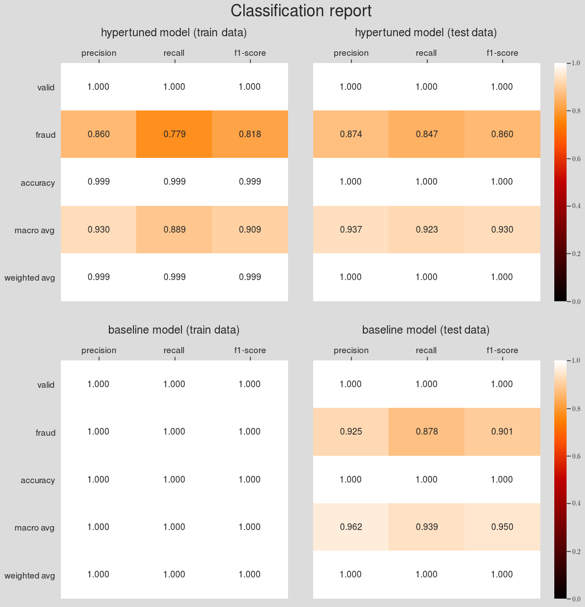
Visualizing the confusion matrix for the baseline and winner model predictions (using $\theta=0.5$ and $\theta=\theta_{\mathrm{best}}$)
from sklearn.metrics import confusion_matrix
fig, ax = plt.subplots(3, 2, figsize=(10,15), dpi=200)
ax = ax.flat
plt.tight_layout(h_pad=8, w_pad=5)
trues = [y_train, y_test]
pred_dict = {r'Tuned train data($\theta=0.5$)': y_pred_train_50,
r'Tuned test data($\theta=0.5$)': y_pred_test_50,
r'Tuned train data($\theta=\theta_{best}$)': y_pred_train,
r'Tuned test data($\theta=\theta_{best}$)': y_pred_test,
'Baseline train data': y_pred_train_baseline,
'Baseline test data': y_pred_test_baseline
}
labels = ["Valid", "Fraud"]
for i, (model_, pred) in enumerate(pred_dict.items()):
true = trues[i%2]
conf_mat = confusion_matrix(true, pred)
sns.heatmap(conf_mat, xticklabels=labels,
yticklabels=labels, cmap="Accent_r",
annot=True, annot_kws={'fontsize':'x-large'}, fmt="d", ax=ax[i], cbar=False);
ax[i].set_title(r'{0} model for {1} {2}'.format(*model_.split()), fontsize=14, y=-0.1)
ax[i].set_ylabel('True class', fontsize=14, labelpad=10)
ax[i].set_xlabel('Predicted class', fontsize=14, labelpad=15)
ax[i].xaxis.set_ticks_position('top')
ax[i].xaxis.set_label_position('top')
plt.setp(ax[i].get_xticklabels(), fontsize=12)
plt.setp(ax[i].get_yticklabels(), fontsize=12)
plt.suptitle('Confusion matrix', fontsize=22, y=1.05)
plt.show()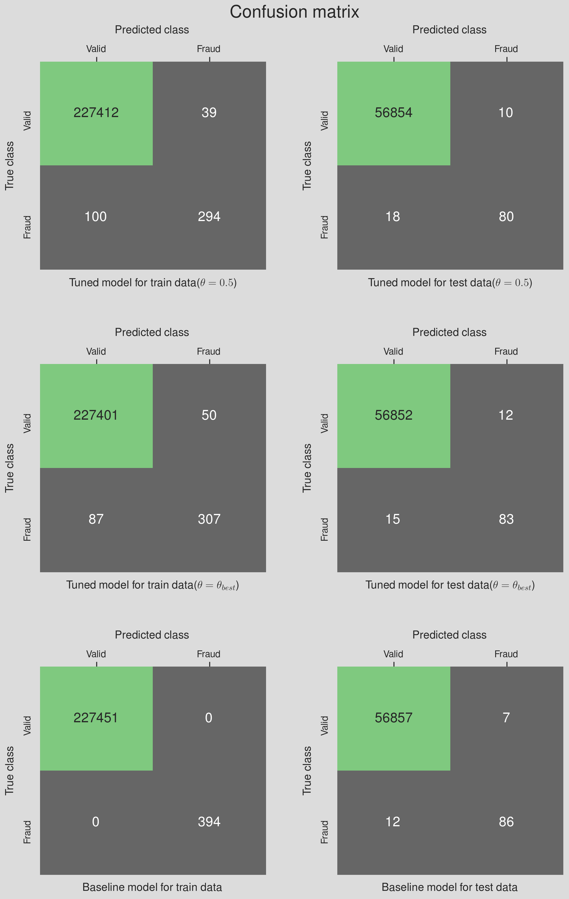
Notes:
-
The baseline model is severly overfitting. This is evident in both Figures 13 and 14 when comparing the training and test results (
aucpr train=1.00, aucpr train=0.81). In fact, according to the acceptance criteria, the baseline model needs to be discarded. - The hypertuned model with the optimal threshold has a lower Type II error (#False negative) compared to the model with $\theta=0.5$; This comes at the cost of a higher Type I error (#$\mathrm{FN}$). For the credit card data, however, one would naturally care much more about reducing the Type II error than the Type I error.
-
Depending on the business objective, the success/failure of the model can be phrased differently. For instance, if we consider the ability to detect all fraud transactions (regardless of some valid transactions labeled as fraud) we can say the hypertuned and baseline models were $84.7$% and $87.7$% successful, respectively. This success measure chnage to $99.806$% and $99.815$% if the business cares about the success in predicting valid transactions only. In real life scenarios, the model evaluation function is persumably more complicated than this. Realisticly, the business objective should be combination of
- Minimizing the losses due to fraud transactions
- Minimizing the model complexity
- Minimizing the customer churn
- Maximizing the business profit
- Minimizing the Type II error
- ...
Summary and Conclusion
- In this project, we went through the process of finding the best supervised model to identify fraudulent transactions in a credit card transaction data
- The dataset was extremely imbalance with a valid-to-fraudulent class ratio of 581 to 1
- Our analysis found the
XGBClassifier()to be the model that best performs on this specific data set and assuming the PR-AUC to be the performance criteria. - Due to the large number of parameters that
XGBoosttakes, we employed a sequential grid search to find the optimal hyperparameters of the model. - The sequential search was performed in 5 steps where at each step, the optimal value for a single or a group of hyperparameters was obtained via cross validation.
- We used
RepeatedStratifiedKFoldto reduce the error in the estimate of mean model performance. - We learned that early stoppping can benefits the training and tuning process by reducing the overfitting and reducing the computation cost.
- We defined a $2%$ threshold as the maximum allowed difference between the train and validation PR-AUC. We did this so that we don't end up with a winner model that the train and test performances are significantly different(overfitting); however, one can set their criteria according to the business objective. For instance, if the business only cares about maximizing the recall (minimizing $\mathrm{FN}$), they set a threshold for the difference in performance between train and validation data in predicting recall instead of PR-AUC.
- We were able to reduce the overfitting in the baseline model by conducting a sequntial grid search on the
xgboostclassfier model parameters relevant to the imbalanced classification problem.